Nordhügel - auch Thyras Hügel genannt - Letztes Update ab 08.12.2023 bis ... - aktuell noch in Bearbeitung und stellenweise etwas durcheinander
Der nördliche der beiden Zwillingshügel wird auf Grund einer jahrhundertealten lokalen Tradition der Königin Thyra zugeschrieben. Der Nordhügel, der über einem älteren, bronzezeitlichen Grabhügel errichtet wurde, hat einen Durchmesser von ca. 60 m und eine Höhe von ca. 7,5 m. In den älteren Hügel war eine hölzernen Grabkammer eingesetzt worden, in der eine oder mehrere Personen beigesetzt wurden. Darüber wurde der Grabhügel aus zahlreichen Lagen aus Gras- und Heidesoden aufgeführt, deren Oberseite man nach unten legte. Darüber wurde eine gemischte Schicht von Sand, Lehm und Torf in 1 m Dicke und ganz außen eine ebenso dicke Schicht von Humuserde aufgefüllt, um den Bewuchs des Hügels mit Gras zu sichern. Der Aufbau lässt erkennen, dass die flache Kuppe des Hügels ursprünglich einen Durchmesser von 25 m besessen hat und ihn damit dem gewöhnlichen flachkuppigen Hügeltyp der Eisenzeit zuweist.
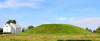 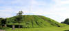 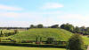 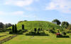 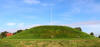
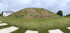 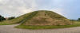 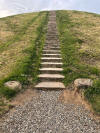 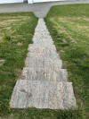
Hier ein ganz aktuelles Luftfoto vom 13.05.2023 - Screenshot vom 08.12.2023 - von Skråfoto, das zum dänischen Amt "Styrelsen for Dataforsyning og Infrastruktur" gehört (Dänische Agentur für Datenversorgung und Infrastruktur) und weltweit kostenlos bereitgestellt wird - frei von Urheberrechten. Die Aufnahmen werden alle zwei Jahre erneuert und neben einer Senkrechtaufnahme wird ein Schrägfoto aus jeder Himmelsrichtung angeboten, das man über eine Adresssuche aufrufen kann.
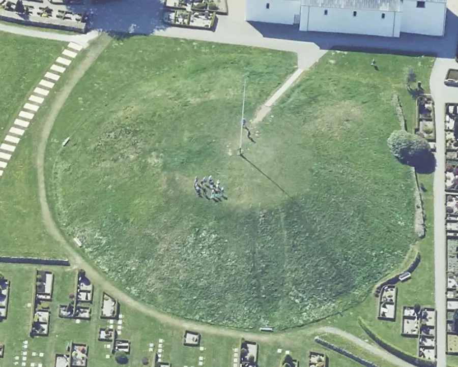
Die Lage des Nordhügels ist übrigens kein Zufall. Die Grabkammer im Nordhügel bildet das geometrische Zentrum des Gesamtkomplexes, den das Denkmalgebiet in Jelling bildet. Auf diesem Plan sind die einzelnen Teile der Denkmäler mit Buchstaben gekennzeichnet. P ist der archäologische Beweis der Palisade. G ist ein Tor in der Palisade. N und S sind Nord- bzw. Südhügel. SN und SS sind die beiden Enden der Schiffssetzung. C ist die aktuelle Steinkirche. R ist König Haralds großer Runenstein. B sind die entdeckten vier Gebäude entlang der Palisade. Die schwarzen Strich-, Punktmarkierungen sind nachweisliche Funde.
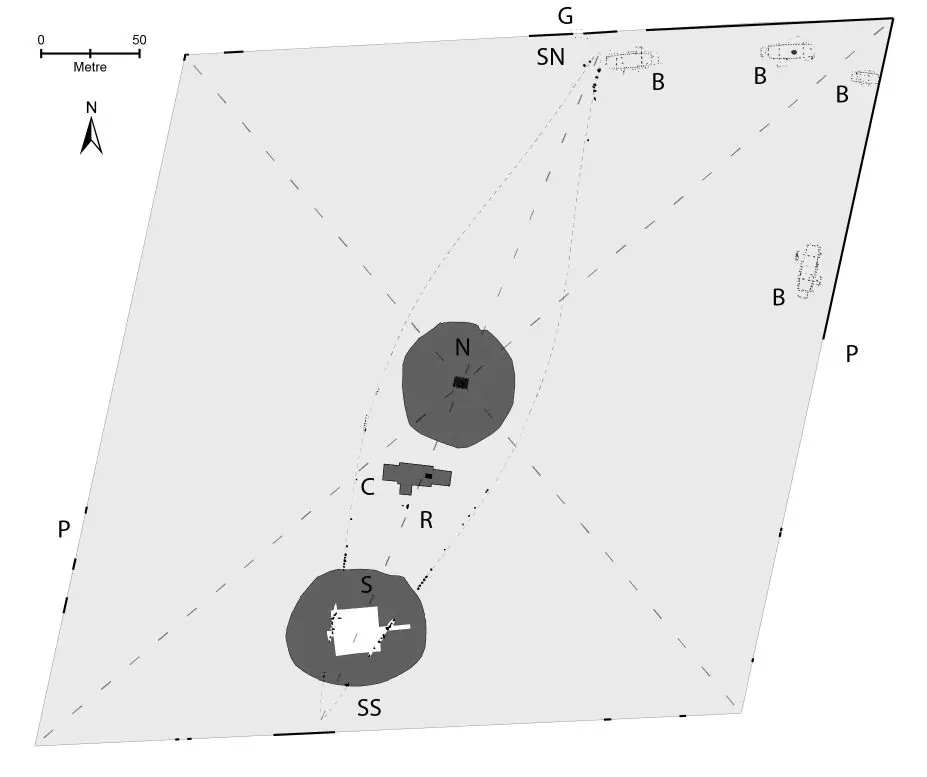
Bildquelle: danmarkshistorien.dk - Jellingmonumenterne, ca. 950-1000 - Zeichnung von: Casper S. Andersen, Arkæologisk IT, Aarhus Universitet - entlehnt am 08.12.2023
Der
Mittelpunkt des nördlichen Hügels liegt wie der des südlichen
Hügels auf der Mittelachse der etwas älteren
Schiffssetzung. Auf dieser Mittelachse und in der
Mitte zwischen dem Nordhügel
und dem Südhügel befindet sich auch
Harald Blauzahns großer Runenstein. Außerdem liegt der
Mittelpunkt des Nordhügels auch auf den
Diagonalen, die man von den vier Ecken der Palisade ziehen kann.
Alles zeigt einen Zusammenhang im schrittweisen Aufbau des
Denkmalkomplexes in
Jelling,
der in zwei Gesamtbauphasen unterteilt ist. Die erste
Phase von ca. 950 bis 965 umfasst die
Schiffssetzung, den Runenstein von
Ausgangspunkt für zahlreiche Ausgrabungen am Nordhügel war der Teich auf der Hügelkuppe, den man erstmals auf einem Stich von Heinrich Rantzau aus dem Jahre 1591 sehen kann (Bezeichnung D). Seinem Wasser sagte man in alter Zeit Heilkraft nach.
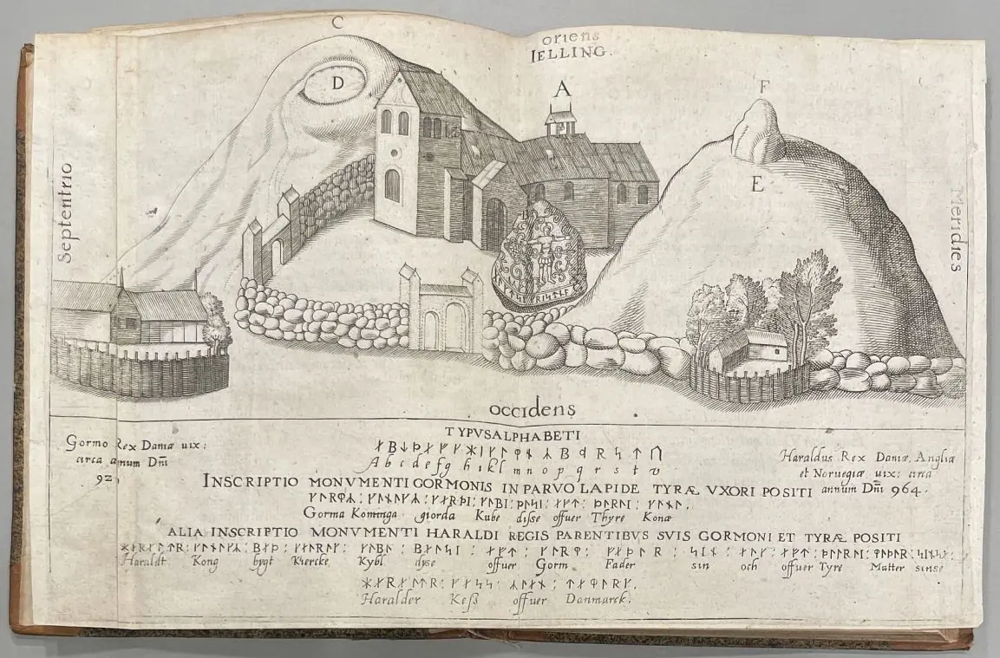
Dieses Bild zeigt eine Fotografie des Originals, die ich am 26.09.2022 in der Königlichen Bibliothek - Den sorte Diamant - in Kopenhagen gefertigt habe Dort ist dieses Werk, das ja auch online eingesehen werden kann, über diesen Link für den Forschungslesesaal bestellbar.
Im Jahr 1638 erstattete der damalige Pfarrer von Jelling (1628-1666), Jørgen Pedersen, einen Bericht an Ole Worm (*13.05.1588 - 31.08.1654, Arzt, Universalgelehrter und der Begründer der Runologie). Darin schrieb er: "Paa den nøreside findis en anden høy, kaldis Droning Tyris høy, paa huilcken der findis offnen paa en stor kilde, imod al natturlighed, och er satt paa bonden med smaa stenn." Übersetzung: "...Auf der Nordseite befindet sich ein weiterer Hügel, der Hügel der Königin Tyris genannt wird. Auf dem Hügel gibt es gegen alle Natur eine große Quelle, die mit kleinen Steinen von den Bauern ausgelegt ist".
Worm hatte den dänischen König Christian IV. im Jahre 1626 dazu bewegt per Rundschreiben alle dänischen Pfarrer aufzufordern, Runensteine, alte Gräber und sonstige Altertümer in ihrem Sprengel zu melden. Die Rückmeldung des Pfarrers findet sich in "Ribe Stifts Beskrivelse 1638" - gesammelt von O.Nielsen, 1875, Kopenhagen - als Sonderdruck in "Danske Samlinger 2, Band 4" erschienen - siehe S. 67 in der pdf-Datei.
Von Ole Worm (*13.05.1588 - 31.08.1654, Arzt, Universalgelehrter und der Begründer der Runologie) erschien 1643 - über 20 Jahre nach seinem Besuch vor Ort - sein bahnbrechendes Werk "Danicorum Monumentorum Libri Sex, Hafniae, 1643". Ab der S. 326 bis zur S. 341 bringt er eine erste und vollständige Beschreibung über Jelling heraus.
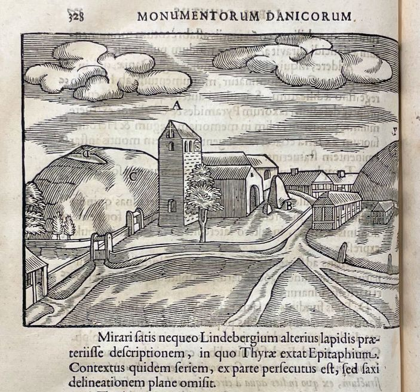
Der Nordhügel mit seinem Teich wird natürlich über die Jahrhunderte in verschiedenen Quellen wiedergegeben. Die o.a. Gesamtdarstellung von Jelling auf der S. 328 mit dem gespiegeltem "D" für den Teich auf dem Nordhügel "C" habe ich am Montag, 26.09.2022, in der Königlichen Bibliothek - Den sorte Diamant - in Kopenhagen aus einem dort verwahrten Original selbst fotografiert.
Stephan Hansen Stephanius (* 23.07.1599 - 22.04.1650, dänischer Philologe und Historiker) hat in seinem 1645 erschienenen Werk "Notae uberiores in Historiam Danicam Saxonis Grammatici" (Kommentierte Ausgabe von Saxos Geschichte der Dänen) auf der S. 202 unter Rückgriff auf das Material / die Druckplatten von Ole Worm (wie später auch Peder Hansen Resen s.u.) zu Jelling diesen Stich abgebildet. Der lateinische Text zu dem gespiegelten "D" - in etwa wortgleich mit dem Werk von Ole Worm - lautet übersetzt: "Die Quelle, aus der von den Einwohnern täglich Wasser geschöpft wird, ist mit Steinen eingefasst und hat einen Umfang von 47 Ellen (Anm.: 1 Elle = 62,77 cm / insg. ca. 29,5 m)".
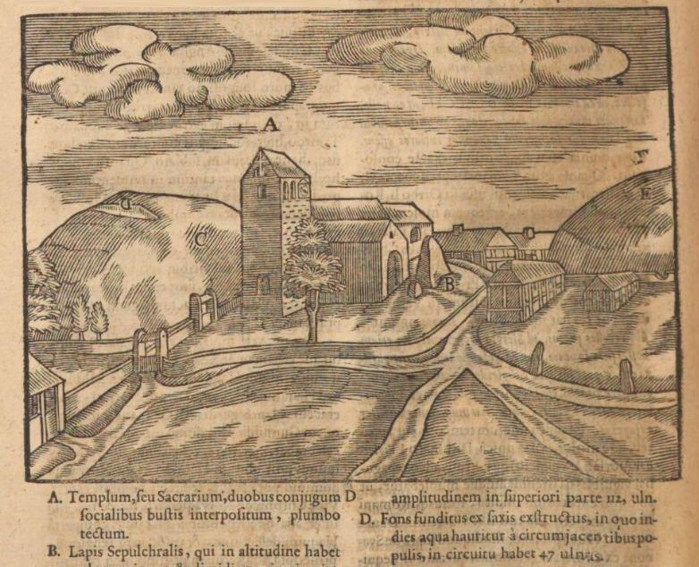
Ein weiterer Bericht zum Nordhügel stammt von Troels Arnkiel (Getauft 28.04.1638 - 07.09.1712, lutherischer Pastor und Altertumsforscher). In seinem im Jahr 1702 erschienen Werk "M. Trogilli Arnkiels, Probsten und Pastoren zu Apenrade Jn dem Hertzogthumb Schleßwig-Hollstein/ Außführliche Eröffnung Cimbrische Heyden-Begräbnisse : Wie unsere Vorfahren Cimbrischer Nation/ Die Sachsen/ Guten/ Wenden und Fresen/ und die von denselben herstammende Mitternächtige Völcker I. Jhre Begräbniß-Gebräuche/ II. Jhre Todten-Gräber/ III. Jhre Grab-Krüge/ IV. Ihre Grab-Schrifften An- und eingerichtet/ ... / Erklähret und mit vielen Kupfferstücken beleuchtiget von M. Trogillo Arnkiel/ Probsten und Pastoren zu Apenrade" macht er im Theil 3, S. 275, unter § 5 diese Anmerkungen zu Jelling und beschreibt den Nordhügel so: "Der Berg Norden der Kirchen darunter die Königin begraben / ist sechs und vierzig Ellen hoch / und drey hundert und sechszig Ellen im Umbfang / unten an der Wurzel. Die Breite oben ist hundert und zwölf Ellen / da ein Brunn herfür quillet."
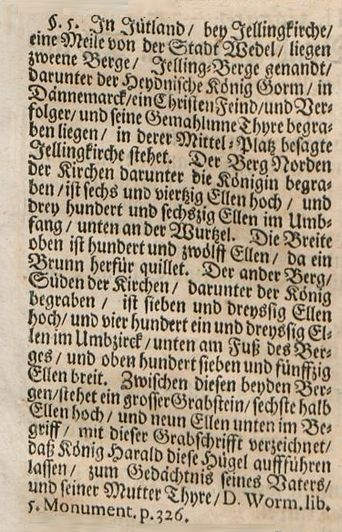
Eine Seite zuvor bringt er (mit dem Hinweis zu "Pag: 275") diese zeichnerische Darstellung der Jelling Monumente die natürlich als Vorlage den Rantzau Prospekt der Jelling Monumente von 1591 hat. Auch hier ist der Teich auf dem Nordhügel - mit "D - der Brunn auff den Berg oder Teich" bezeichnet.
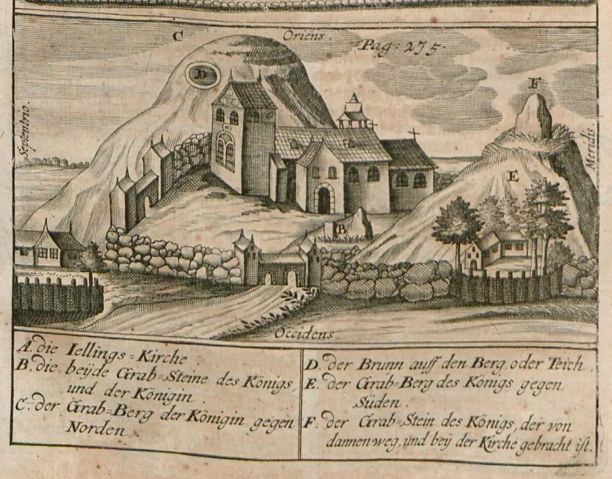
Quelle: Universitäts- und Landesbibliothek Sachsen-Anhalt - https://nbn-resolving.org/urn:nbn:de:gbv:3:1-750088 - Lizenz: Public Domain 1.0 - Screenshots vom 24.06.2023
Im Jahr 1704 war es dann auf Geheiß von König Friedrich IV. (*21.10.1671 - 12.10.1730) zur ersten bekannten Untersuchung des Nordhügels, auch "Königin Thyras Hügel" genannt, in der Hoffnung das Grab von Königin Thyra zu finden, gekommen. Die Arbeiten fanden im Zusammenhang mit der Aufstellung der Landmiliz bei Fårup Agre bei Jelling statt. Aus der Landmiliz konnte der König die nötigen Arbeitskräfte für die Ausgrabungen einziehen.
Quelle: Jellingprojektet - 1704 Frederik IV lader grave i Nordhøjen
Der König erlaubte den Bauern damals offenbar an der Nordseite des Hügels einen Abfluss für den Brunnen zu graben, wohl in deren Hoffnung, dass sich dessen Wasser unten sammelt und sie nicht immer auf den Hügel klettern müssten. Weitere Ergebnisse der Ausgrabung sind nicht bekannt und es gelangten auch keine Fundstücke in die Königliche Kunstkammer in Kopenhagen.
Im Liber Daticus" der
Jelling-Kirche,
einer Aufzeichnung wichtiger Ereignisse und Umstände in der Gemeinde, notierte der Pfarrer
Poul Wedel (*08.01.1724 -
Januar 1782) in
Jelling
am 26.11.1755 folgendes (übersetzt): "Nördlich
des Kirchhofs befindet sich ein sehr großer Hügel, in dem
Königin
Thyra begraben liegt, und es ist auch bemerkenswert, dass sich oben auf
dem Hügel ein kleiner Teich befindet, der selten ausgetrocknet
sei. In früheren Zeiten wurde berichtet, sei er noch nie trocken gewesen. Aber
in der Zeit von
König Friedrich IV und auf seinen Befehl hin wurde
an der nördlichen Seite durch das Landvolk gegraben.
Es handelte sich gewissermaßen um einen mit Wasser gefüllten Umfang von
8 bis 10 Ellen."
Dazu heißt es auch in
dem Buch mit dem Titel "Kongehøiene
i Jellinge og deres Undersøgelse efter Kong Frederik VII's Befaling i 1861"
auf der
S. 5/6 (übersetzt): "Darüber heißt es in einem Liber
Daticus im Archiv von
Jelling
Præstegaard: Laut dem Bericht eines alten Mannes, Anders
Jensen, soweit er sich erinnern kann, wurde Thyras Hügel
von Bürgern der Stadt
Jelling
aufgrund einer Königlichen Order 1704 ausgegraben, als dieser
an der Pfingstparade auf den Feldern von
Faarup anwesend war. Ansonsten berichten er und eine
alte Frau hier in der Stadt, dass es bis zu seiner Ausgrabung immer
zahlreiche Karpfen in dem Teich auf dem Hügel gegeben habe. Die alte Frau sagt,
und als das Wasser ausgegangen war, suchten sie mit einer 13 Ellen langen Stange
in einem Loch auf dem Hügel, um zu sehen, ob man den Boden erreichen könne, aber
es war nicht möglich. Im selben "Liber Daticus" heißt es an
anderer Stelle: Nördlich des Kirchhofs befindet sich ein sehr großer Hügel, in
dem
Königin Thyra sich begraben ließ, und es ist auch bemerkenswert, dass
sich oben auf dem Hügel ein kleiner Teich befindet, der selten
ausgetrocknet sei. In früheren Zeiten wurde berichtet, sei er noch nie trocken
gewesen, weiß man hier. Es handelte sich gewissermaßen um eine runde Strecke von
8 bis 10 Ellen mit Wasser gefüllt." In diesen Berichten geht es vor allem um den
Brunnen auf Thyras Hügel, aber sie enthalten nichts darüber,
dass bei den Ausgrabungen etwas gefunden wurde. Es ist ziemlich sicher, dass
König Friedrich IV., der 1704 selbst in
Jelling
anwesend war, die Grabkammer weder fand noch von seinen
Nachforschungen profitierte, da alle Berichte darüber fehlen. Im Jahr
1721 war der König zusammen mit
Königin Anna Sophie von Reventlow und
Prinzessin Charlotte Amalie wieder in
Jelling,
und der Priester,
Mag. Mouritz Mouritzen Höyer, musste bei
dieser Gelegenheit die Runensteine und Grabhügel
vorführen und erklären, über die er später ein kleines Buch schrieb: Encomion
Jellingense, das noch im Manuskript vorliegt." Zitiert nach einem
Beitrag von
In der Königlichen Bibliothek - Den sorte Diamant in Kopenhagen wird unter der Signatur Thott 751 folio die o.a. Handschrift mit dem Titel "Encomium Jellingense" von Mag. Mouritz Mouritzen Höyer (*11.03.1678 - 30.03.1750, Pfarrer in Jelling seit 1702, ab 1724 in Vejle) aus dem Jahr 1721 verwahrt. Es handelt sich um mehrere Aufzeichnungen in einer Sammlung, wobei dieses Kleinod den "Teil c" darstellt.
Bei meinem Besuch am Dienstag, 27.09.2022, in der Königlichen Bibliothek in Kopenhagen durfte ich dieses Werk in Händen halten und fotografieren. Das musste ich natürlich über das Internet und einen Bibliothek-Account vorbestellen. Daraus habe ich diese pdf-Datei erstellt.
Höyer war ab 1702 Pfarrer in Jelling und musste auf königlichen Befehl zum Besuch der Königin Anna Sophie von Reventlow (Frau des dänischen/norwegischen Königs Friedrich IV. ) - in Begleitung ihrer Stieftochter Prinzessin Charlotte Amalie - am Dienstag, 05. August 1721, einen mündlichen Vortrag über Jelling und seine Monumente vor ihr halten. In der Königlichen Bibliothek befinden sich davon aber mehrere Abschriften (Thott 1471 kvart / Uldall 465 kvart / Additamenta 193 kvart / GKS 740 fol. / NKS 800 kvart / dazu noch eine im Landsarkivet for Fyn, Odense, Karen Brahes Bibliotek, C III,2 (siehe S. 81 = S. 85 in der pdf-Datei - die Karen Brahe Bibliothek ist aber schon 2010 in das Roskilde Kloster verlegt worden und kann nur in Absprache dann über die benachbarte Roskilde Bibliothek für Forschungszwecke genutzt werden), die sich über die Jahrhunderte erhalten haben und auf verschiedenen Wegen Eingang in die Königliche Bibliothek fanden.
Ferner gibt es über die Digitale Sammlung des Nationalmuseums Kopenhagen - unter diesem Link - noch diese weitere Abschrift von "Encomium Jellingense" in 13 Einzelteilen in hochauflösender Qualität, die auch einzeln heruntergeladen werden können.
In dieser Ausgabe des Manuskripts gibt Höyer unter "3. De tvende stoere høje" auf der S. 20-21 seine Beschreibung zum Nordhügel ab (Oben die betreffenden Passagen von mir rot umrandet): "[1] Dend høj, hvorudi dronningen ligger begraven, findes udi breden oven om 112, neden til 360 allen, udi højden 46 allen. Oven paa bemelte nørre høj er et dybt hul eller brønd udi omkreds 47 allen, som i forrige tider med got vand for indbiugerne haver værit forsiunet, men nu i grunden forstopped, saa det vand, som nu er, er regnevand, som tvende gange i min tid haver været tør, ellers er hullet teml. dyb, saa mand med en stage paa 5 - 6 allen icke kand naae til fast bond, men vel paa sten kand støde paa begge sider, hvoraf mand slutter, det maa have været en kilde omsat med sten udi gamle dage. [2] Jeg vil inted melde om dend gamle sagn eller fabul, att denne kilde skulde have værit hellig til at læge allehaande brech, indtil en mand skulde have toet sin blinde hestes øjne, hvilchen skal have faaed sit siun, men manden blefved blind og kilden siden ved saadan vanhelligelse forderved." Übersetzung: "[1] Der Hügel, in dem die Königin begraben liegt, hat eine Breite von oben 112, unten von 360 Ellen und eine Höhe von 46 Ellen. Auf dem nördlichen Hügel befindet sich ein tiefes Loch oder ein Brunnen mit einem Umfang von 47 Ellen, der früher mit gutem Wasser für die Einwohner gefüllt war, heute aber weitgehend versiegt ist. Das Wasser, das jetzt noch vorhanden ist, ist Regenwasser, das in meiner Zeit zweimal trockenfiel, sonst ist das Loch ziemlich tief, so dass ein Mann mit einer Stange von 5 oder 6 Ellen keinen festen Boden erreichen kann, sondern auf beiden Seiten auf Steine stoßen kann, woraus man schließen kann, dass es sich früher um eine mit Steinen gefüllte Quelle gehandelt haben muss. [2] Ich werde über die alte Legende oder Fabel berichten, dass diese Quelle als heilig für die Heilung aller Arten von Krankheiten galt, bis ein Mann die Augen seines blinden Pferdes ausgewaschen haben soll, worüber das Pferd geheilt, aber der Mann erblindete und die Quelle dadurch ihre Heilkraft verlor."
Zwischen den beiden Textteilen hat er einen Hinweis auf das Werk von Erik Pontoppidan (der Jüngere, *03.09.1698 - 20.12.1764, dänisch-lutherischer Bischof, Theologe und Autor) aus dem Jahr 1730 mit dem Titel "Theatrum Daniæ veteris et modernaæ oder: Schau-Bühne des alten und jetzigen Dännemarks"eingefügt. Dort heißt es nämlich unter der Randbemerkung "Naturwunder":
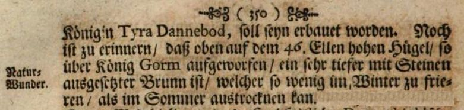
Im Vejle Amts Aarbog, 1943, gibt es auf den S. 145-166 den Artikel mit dem Titel "Mourits Mouritsen Højer (Jellings Pris)" von Anders Bæksted (16.08.1906 - 18.06.1868, Museumsinspektor und Runologe) zu diesem Werk. Der Autor gibt darin den Inhalt der Handschrift Thott 751 folio in Druckschrift wieder.
Von Peter Penz gibt es auf der Webseite des Jelling Projekt noch diese informative Abhandlung zur Thematik.
Auch Erik Pontoppidan (der Jüngere, *03.09.1698 - 20.12.1764) macht in seinem Werk von 1769 "Den Danske Atlas" - Tomus V - Bind II. (= S. 30 in der pdf-Datei) Ausführungen zu der Existenz des Brunnens auf dem Nordhügel: "Oven i Droningens Høi er en stor og dyb Kilde, med Kampesteene omsat, hvoraf Indvaanerne hente deres Vand. Om denne Kildes besønderlige Situation, See Oeconom. Magazin T. V. p, 201." Übersetzung: "Oben auf dem Königinnenhügel gibt es eine große und tiefe mit Steinen eingefassten Quelle, aus der die Bewohner ihr Wasser beziehen. Zur besonderen Situation dieser Quelle siehe Oeconom. Magazin T.V. S. 201."
Zu dessen Anmerkung siehe hier: Danmarks og Norges oeconomiske Magazin, Bind V, 1761 - S. 201. Dort schreibt Søren Thestrup übersetzt: "...Ich muss auch anmerken, dass ich, als ich den zweiten Hügel und andere Denkmäler in Jelling sah, über die mir unsere Gelehrten früher und später geschrieben hatten, die Quelle fand, die sich noch immer auf dem Königin Thyre Dannebod Hügel nördlich der Kirche befindet. So weit das Auge reicht, mehr als zehn Ellen über der Oberfläche des umliegenden Feldes konnte ich im Umkreis von einer Meile keinen Ort erkennen, der so hoch war, geschweige denn höher, als diese Quelle, so dass die Angelegenheit eine Untersuchung durch einen Naturforscher wert ist. Wie funktioniert dieses Wasser, das ohne ein scheinbares Gleichgewicht oder künstliches Mittel auf diesem Grabhügel so hoch steigt?..." Anmerkung von mir: Über Hügelbohrungen 2009 und damit einhergehende Forschungen/Versuche wird die Antwort auf diese wirklich spannende Frage gegeben!
Aus dem Jahr 1766 findet sich in der 167-seitigen Handschrift "Forsøg til en historisk Beskrivelse over Thyrild Herred i Riber Stift" vom damaligen Pfarrer in Jelling, von Poul Wedel (*08.01.1724 - Januar 1782), verfasst, auf der S. 95 dieser Eintrag:
"Kongens høy, eller Begravelsessted, er sønden for kirke. Dend har en bred og flak Overdeel, og skal, efter Lindenbergs Beregning hos Wormium, have i sin øverste Omkreds 157 allen, og ved Roden 431 allen. Højden skalle være 37 allen. Men Tidens Længde kand ventelig herudi giort Forandring. I dend nordre Høy ligger Dronningen. Her skal Høyden, efter fornævnte Beregning, være 46 allen, circumferencen ved Roden 360 og oven omkring 112, og sluttes begges Størelse lettig heraf... Begge Høye har stedse været anseete som Kirkens Eyendomme. Paa Droningens Høy er en Brønd eller dyb Vandsted, som i sin øverste Vidde skal have holdet 47 Allen. Dend skal fra Bunden af være opsat med Steene og har tilforn været lang dyberne, indtil dend efter høysalig Kong Frider: 4ti Befalning blev i Aaret 1704, for en Deel, udgravet, dog er dend endnu saa dyb, at Vandet meget sjælden udtørres, endog i de varmeste Sommere. Der fortælles, at denne Kilde skal i forrige Tider haft en Lægedoms Kraft."
Übersetzung: "Der Königshügel oder Begräbnisplatz liegt südlich der Kirche. Er hat einen breiten und flachen oberen Teil und muss nach Lindenbergs Berechnung in Ole Worms Werk (Anm.: Danicorum Monumentorum Libri Sex) in seinem oberen Umfang 157 Ellen und 431 Ellen über dem Erdboden haben. Die Höhe muss 37 Ellen betragen. Allerdings ist hier mit einer Änderung der Zeitspanne zu rechnen. Im nördlichen Hügel liegt die Königin. Hier muss nach der oben genannten Berechnung die Höhe 46 Ellen betragen, der Umfang über dem Erdboden 360 und an der Spitze etwa 112, und die Größe beider lässt sich daraus leicht ableiten... Beide Hügel wurden immer als das Eigentum der Kirche angesehen. Auf dem Königinnenhügel befindet sich ein Brunnen oder Teich, der in seinem Umfang 47 Ellen gehabt muss. Er muss mit Steinen vom Boden aus errichtet worden sein und war zuvor sehr tief, bis er auf Befehl seiner königlichen Hoheit Friedrich der IV. im Jahr 1704 teilweise ausgegraben wurde. Aber das Wasser ist immer noch so tief, dass es nur sehr selten austrocknet, auch nicht in den heißesten Sommern. Es wird gesagt, dass diese Quelle in früheren Zeiten eine heilende Kraft gehabt hat."
Im Jahr 1797 kam der Buchdrucker
Aosmann Isfron von
Vejle
nach
Jelling,
wo er mit größter Aufmerksamkeit die Hügel und die
beiden Runensteine studierte: ...diese Raritäten und Reliquien des
Alters, die sonst nirgends in den nordischen Königreichen und Ländern zu finden
sind." Zu seinem Besuch fertigte er ein kleines Manuskript mit
dem Titel "Monumentum
Jellingense" an. Isfrons Zeichnungen zeigen die
Runensteine von
Die traditionellen Namen
der beiden Hügel,
Aus dem Manuskript geht
hervor, dass
Isfron gebürtiger Isländer war. 1797
war er Drucker in Vejle, muss aber schon früher nach
Dänemark gekommen sein, denn 1785 hatte er die
Staatsbürgerschaft als Buchbinder in der
Stadt Fåborg
auf Fünen
erhalten, wo er im Staatsbürgerschaftsprotokoll unter dem Namen
Aosmann Isfron aufgeführt ist.
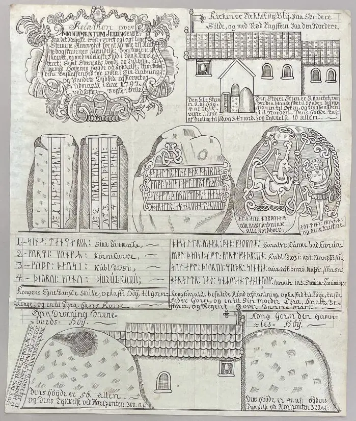
Das erhaltene Originalexemplar des Manuskripts befindet sich in der Handschriftensammlung der Königlichen Bibliothek in Kopenhagen und wird dort unter NKS 801 kvart vorgehalten (2 Teile - einmal das Manuskript - 10 beschriebene Seiten - und einmal die daraus entnommene Zeichnung der Monumente). Dieses Kleinod habe ich bei meinem dortigen Besuch am Montag, 26.09.2022, in Händen halten und fotografieren dürfen. Aus den einzelnen Fotos habe ich eine komplette Ausgabe des Originals als pdf-Datei erstellt.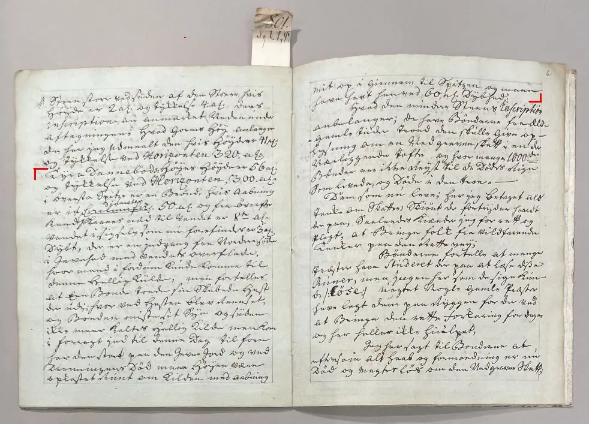
Zwischen den (von mir eingefügten) roten Ecken beschreibt er den Nordhügel auf dieser Doppelseite wie folgt: "Tyra Danneboeds-Høyens Høyde er 56 Al. og Tykkelse ved Horizonten 300 Al. I øverste Spitze er en Brønd, hvis Aabninger in Circumser 50 Al. og fra den øverste Kandt skraas ned til Vandet er 8te Al. Vandt i sig selv, som nu forefindes, er 3 Al. dybt, der er kun en Indgang fra Norden i Jevnhed med Vandets Overflade, hvor mand i fordum kunde komme til denne hellig Kilde, men fortælles at een Bonde toede sin skabede Hest derudi, hvor ved Hesten blev renset og Bonden mistede sit Syn og siden ikke mere kaldtes hellig Kilde, men kom i foragt ind til denne Dag til forn har den staaet paa den jevne Jord og ved Dronningens Død maa Høyen være opkastet rundt om Kilden med Aabning mit op i giennem till Spitzen og maa have havnt henved 60 Al. af Dybhed."
Übersetzung: "Tyra Danebods Hügel hat eine Höhe von 56 Ellen und einen Umfang am Erdboden von 300 Ellen. Auf dem Hügel befindet sich ein Brunnen, dessen Rand im Umfang bei 50 Ellen liegt. Von der oberen Hangkante bis zum Wasserspiegel sind es 8 Ellen. Das Wasser selbst, wie man es vorfindet, ist 3 Ellen tief. Es gibt nur einen Zugang von Norden auf Höhe der Wasseroberfläche, durch den der Mensch früher zu dieser heiligen Quelle gelangen konnte. Es heißt, ein Bauer habe sein abgeschafftes Pferd dorthin gebracht, wo er es reinigte. Der Bauer verlor dabei sein Augenlicht und seitdem wurde sie nicht mehr als heilige Quelle bezeichnet. Früher befand sich die Quelle auf ebenem Boden und beim Tod der Königin muss der Hügel um die Quelle herum aufgeschüttet worden sein, mit einer Öffnung durch den sie die Hügelspitze nach etwa 60 Ellen erreichte."
Eine Kopie von Isfrons Werk gehört heute dem Nationalmuseum Kopenhagen. Die wurde digitalisiert und kann in 9 einzelnen Teilen hier abgerufen werden. Professor Jens Jacob Asmussen Worsaae (*14.03.1821 - 15.08.1885, dänischer Archäologe und Vorgeschichtler) erhielt dieses Exemplar wohl 1861 von König Frederik VII. und übergab es später dem (damaligen) Museum für Nordische Altertümer in Kopenhagen. Der König selbst muss die Abschrift in Jelling erhalten haben.
Quelle: http://jelling.natmus.dk/om-jelling/tradition-og-historie/aosmann-isfron-1797/
Am 01.11.1808 hat der damalige Pfarrer von Jelling Christian Lunov Ferslev (*26.01.1769 - 04.03.1831), der 1802 in sein Amt eingeführt worden war, einen Bericht mit dem Titel "Oldsager udi Jelling Bye og Sogn, Riber Stift" an die Altertümerkommission in Kopenhagen gesandt. Die hatte im Frühjahr 1808 einen Fragebogen mit 12 Punkten im Hinblick auf die Erfassung von Grabhügeln/Runensteinen/Thingstätten/Wallanlagen usw. über die Bischöfe an die örtlichen Pfarrer versandt und um Rückmeldungen zu den bei ihnen existierenden Altertümern gebeten. Der Bericht, der also noch wenige Jahre vor der Entdeckung der Grabkammer verfasst wurde, findet sich heute in dem Buch "Danske præsters indberetninger til oldsagskommissionen af 1807, Wormianum 1995, Vest- og Sydjylland, S. 61-63" mit folgendem Wortlaut:
"Udi Jelling Bye ligge 2de mærkværdige Høye, hver paa sin Side af Kirken - kaldte, den eene Kongens og den anden Dronningens Høy
1 Kongens Høy, hvori Kong Gorm ligger begravet, ligger tæt sønden for Kirken, er omhegnet med Kampesteen og en liden Riisgjerde, den har en meget stor Jevn Overflade, hvorfra maa kan see meget langt, og med gode blotte Øjne see 18 Kirker. -/: Oven paa denne Høy kunde anbringes en smuk Lysthave.
2 Dronningens Høy, hvori Dronning Thyra ligger begravet, ligger tæt norden for Kirken, er paå enkelte Steder omhegnet med er liden steengjerde, har en Kilde oventil, hvis Bund ikke ved noget Middel kan naaes, den bliver aldrig tør men er for nærværende Tid, af Mangel paa Rydning, noget moradsig; Hvorfra dette Vand egentlig har sin Udspring, vides ikke. Meeningerne herom, ere meget ulige. Efter gamle Mænds Sigende skal der være Kaaber-Render under Iorden, gjennem hvilke Vandet lber fra en i Jelling Sogn Sogn højtliggende Bye, Rugballe kaldet - Andre meene, at denne Kilde har sin Oprindelse fra en ved Tinnet Bye i Nykirke Sogn liggende høy Banke, ved hvis Fod gives en Væld-Kilde, som deler sig i tvende Arme, hvoraf den eene løber i Øster- og den anden i Vesterhavet -
Disse 2de Høye ere sammenkjørte - Illing Bye og tæt uden for samme gives adskillige Damme, hvoraf formodes, at Iorden er tagen -
Anmærkning Vandet paa Dronningens Høy var i ældre Tider meget klart - det forsynede hele Byen, og man hentede her sit Theevand - Denne Kilde var en saa kaldet Helligkilde, og blev besøgt af Mange, og var i denne Anseelse, indtil en Mand /:efter Fortælling:/ toede en skabet Hest derudi, da Ingen saa længere tog Vand derfra Kammerraad Nellemann som ejede Leerbeck i Hover Sogn og tillige Jelling Kirke - vilde have ladet denne Kilde rydde, og omhegne med Stakit, men da han imidlertid solgte Gaard og Kirke, ophørte dette Gode der var af saamegen større Vigtighed, som Jelling Bye ofte lider stor Mangel paa Vand - Jeg har opmuntret Byemændene til at rydde denne, Jeg har tilbudet 2 Karle til at tage Deel i Arbeydet - Men - Ogsaa her har Jeg seet det gamle Jydske Ordsprog stadfæstet: Fælled er Sælled...
Übersetzung: "In Jelling liegen zwei bemerkenswerte Hügel, jeder auf einer Seite der Kirche einer wird Königshügel und der andere Königinnenhügel genannt.1 Der Königshügel, in dem König Gorm begraben liegt, liegt südlich der Kirche, ist von Steinen und einem kleinen Reiszaun umgeben und hat oben eine sehr große, ebene Fläche, von der aus man sehr weit und gut sehen kann. Mit bloßem Auge sieht man 18 Kirchen. -/: Auf diesem Hügel könnte ein wunderschöner Garten angelegt werden.
2 Der Hügel der Königin, in dem Königin Thyra begraben liegt, liegt dicht nördlich der Kirche, ist an einigen Stellen von einem kleinen Steinzaun umgeben und hat darüber eine Quelle, deren Grund noch nie erreicht werden konnte. Es wird nie trocken, aber im Moment ist er mangels Reinigung etwas schlammig. Es ist nicht bekannt, woher dieses Wasser tatsächlich stammt. Die Meinungen hierzu sind sehr unterschiedlich. Den Sprüchen alter Männer zufolge muss es unter der Erde Kupferrinnen geben, durch die das Wasser aus einer hoch gelegenen Quelle namens Rugballe in die Gemeinde Jelling fließt. Andere glauben, dass diese Quelle ihren Ursprung an einem hohen Ufer in der Nähe von Tinnet Bye in der Gemeinde Nykirke hat, an deren Fuß sich eine Quelle, die aus dem Boden springt, befindet, die sich dann in zwei Arme teilt, von denen einer in die Ost- und der andere in die Nordsee mündet.
Diese 2 Hügel gehören zusammen - Im Ort Jelling und in deren Umgebung liegen mehrere Teiche, aus denen vermutlich die Erde entnommen wurde.
Hinweis: Das Wasser auf dem Königinnenhügel war früher sehr klar es versorgte die ganze Stadt, und die Menschen bekamen hier ihr Teewasser Diese Quelle war eine sogenannte heilige Quelle und wurde von vielen besucht und blieb es in dieser Hinsicht bis ein Mann /: nach einer Legende :/ darin sein Pferd reinigte, ab dann hat niemand mehr Wasser von dort geholt Herr Rat der Kammer Nellemann (Anm.: Jens Mogensen Nellemann, *08.08.1754 - 29.08.1824, Unterkommissar in Koldinghus), dem der Gutshof Lerbæk in der Gemeinde Hover und auch die Jelling Kirche gehörten wollte diese Quelle räumen und mit einem Lattenzaun einfrieden lassen, aber da er inzwischen den Gutshof und die Kirche verkaufte, hat sich das erledigt. Das war auch sehr richtig und auch von größerer Bedeutung, da Jelling oft unter großem Wassermangel leidet ich habe die Bürger ermutigt, die Reinigung vorzunehmen, ich habe zwei Diener angeboten, die sich an den Arbeiten beteiligt hätten - aber - ich habe auch hier ein altes Jütland-Sprichwort bestätigt bekommen: Gemeinsames ist versiegt ...
Im Jahr 1814 hat J.J. Fyhn (Jens Jørgen Fyhn, *09.02.1788 - 25.02.1866, Lokalhistoriker, Maler) ein Aquarell mit dem Textzusatz: "Jelling Kirke mellem Gorms og Thyres Höie" gemalt. Die Jelling Monumente sieht man hier aus Richtung Norden. Auf dem mit "Thyras H." bezeichneten Hügel sieht man eine große Einsenkung an der Spitze - den Teich /Brunnen.
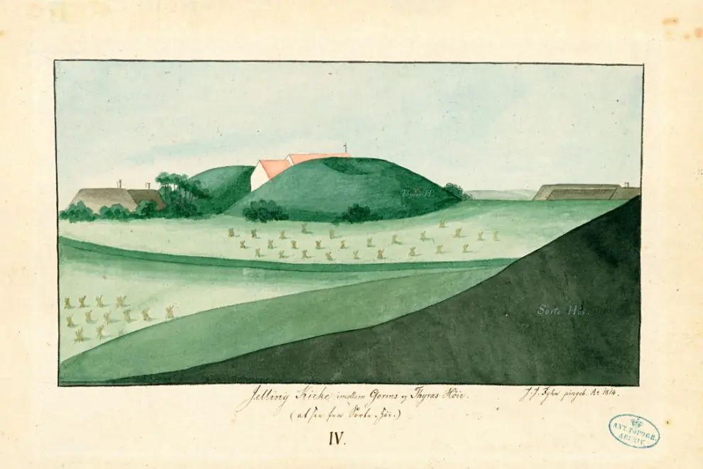
Es waren nicht die Archäologen, sondern die Bauersleute, die die archäologischen Ausgrabungen am Nordhügel in Jelling eingeleitet haben. Denn 1819 trocknete plötzlich der kleine Teich auf dem nördlichen Hügel aus. Da das Wasser damals in Jelling knapp war, versuchten die Bauern des Dorfes im folgenden Jahr sich daraus wieder Wasser zu beschaffen, indem sie den Teich bis zum Boden aufgruben. Als die Dorfbewohner auf eine große gezimmerte Kammer stießen, verboten die Behörden alle weiteren Grabungen; aber das Gerücht berichtete von ungeheuren Schätzen, die man geborgen hatte, bevor das Loch im Dach des Grabbaues geschlossen wurde. Eine Untersuchung wurde durchgeführt, bei der die wichtigsten Aufschlüsse über die Grabkammer gesichert und die Dinge gerettet wurden, die noch von ihrem Inhalt erhalten waren. Der Altertumsforscher Finnur Magnusson, der sich damals gerade in Fünen aufhielt und von dort herbeigerufen wurde, hat später über den Vorgang berichtet. Gerade am Abend bevor wir aus Fünen abreisten erfuhren wir zufällig von dem Gerücht, das aus der Gegend von Vejle gekommen war, wonach die Jellinger Bauern kürzlich den Brunnen auf Königin Thyras Hügel aufgegraben hatten, um das ausgebliebene Wasser zu beschaffen. Sie erreichten nicht ihr Ziel, stießen jedoch auf ein unterirdisches Holzgebäude. Man war aufs äußerste gespannt als Finn Magnussen sich am Tag darauf (2. Juni 1820) einfand. Es erwies sich jedoch, dass die Kammer leer war. Der Brunnen, den man für eine natürliche Quelle hielt, hatte in Wirklichkeit den vermeintlichen Grabräubern als Plünderungsloch gedient.
Die erste schriftliche Aufzeichnung zu diesem Ereignis stammt vom 10.05.1820, als der damalige Pfarrer von Jelling Christian Lunov Ferslev (*26.01.1769 - 04.03.1831) einen Brief an "Velbyrdige Hr. Asessor Hersleb, Bye og Herredsfoged" schrieb:
"Jeg giver mig herved den Frihed at andrage for Deres Velbyrdighed, at de gode Mænd i Jelling By og Sogn af Iver og Nidkjærhed for den gode Sag søgde i April Maaned dette Aar at rense den paa Dronning Thyras Høy i Jelling By, noksom bekjendte værende kilde.
Aarsagen hvorfore Disse foretoge sig dette Arbejde, var denne, at Jelling By saa ofte hjemsøges af betydelig Mangel paa Vand, og har i det sidst forløbne Aar, næsten i de 3 Parter af Aaret, maattet hente Vandet med Heste og Vogn, som ikke allene falder besværligt og bekosteligt, men og betænkeligt i Tilfælde af opkommende Ildebrand, da Vi af Mangel paa Vand maatte see vore Eiendele opgaae i Røg og Lue, uden at kunne slukke Ilden.
I de 18 Aar, Jeg her har været Præst, har der altid staaet Vand paa denne Høy, indtil forrige Sommer, da den syntes ganske at være udtørret, og har dog engang været saa overflødig, at Vandet i ældre Tider løb gjennem en Rende i den sydlige Side af Høyen ned i en ved Kirkegårdsmuren anstillet Kum; og dette Vand saa rent, saa velsmagende, at Man endog fra fjerne Steder siges der at have hentet Theevand.
Ved Forsøget paa at rydde Brønden, traf Man paa svære Steen, hvormed denne har været omgiven, men nu vare styrtet sammen. Disse hidsedes op. Og efter saaledes at have kastet en betydelig Dybde traf man paa svære Egebjelker, lagde paa tværs og langs. Nu standsedes Arbeydet- gjennem en snever Aabning kunde man gaae ned, og fandt da i den vestlige Side af Høyen en Aflukke, forsynet med svære Egebjælker og Loft af sammenpløyede Egefjel, men hvoraf en Deel vare nedfaldne. To af Bjelkerne vare brækkede.
I den sydlige Side af Høyen fandt man rigtig nok den omtalte Rende bestaaende af Træ og Steen, hvorigjennem Vandet formodentlig har haft sit Løb ned i den anbragte Kum. Saare besynderligt er det, at Vandet næsten paa Spidsen af Høyen i den sydlige Side bliver ved at sige (sive). Meer er der ikke at see. Nu er Jorden ovenfra for en stor Deel styrtet ned, og har derved dækket Nedgangen saaledes, at ingen kan komme der, førend en Mængde Jord blev opkastet.
Jeg som Stedets Præst, ansaae det for Pligt at andrage dette for Deres Velbyrdighed, i Tanke om, at De, som lovkyndig Mand, maaskee finder, at det bør forestilles det Høykongelige Danske Cancellie til høyere omdømme og nærmere Bestemmelse - Jelling Præstegaard, 10. May 1820 - Ærbødigst P. Ferslev, Sognepræst for Jelling og Hover Menigheder."
Übersetzung: "Hiermit erlaube ich mir, Sie um Ihr Wohlwollen zu
bitten, weil die guten Männer der Stadt und der Gemeinde Jelling aus Eifer und
Enthusiasmus für die gute Sache im Monat April dieses Jahres versucht haben, auf
Königin Thyras Hügel in der Stadt Jelling eine Reinigung der bekannter Quelle
herbeizuführen. Der Grund, warum diese Arbeiten durchgeführt wurden, war, dass
die Stadt Jelling zuletzt so oft von einem erheblichen Wassermangel heimgesucht
wurde und im letzten Jahr fast dreimal im Jahr das Wasser mit Pferd und Wagen
herbeigeholt werden musste , was nicht nur schwierig und kostspielig war,
sondern auch gefährlich im Falle eines Brandes, wenn wir aufgrund von
Wassermangel zusehen mussten, wie unser Hab und Gut in Rauch und Flammen
aufging, ohne dass wir das Feuer löschen konnten.
In den 18 Jahren, in denen
ich hier Priester bin, gab es auf diesem Hügel immer Wasser, bis er letzten
Sommer völlig ausgetrocknet zu sein schien. Früher gab es Wasser im Überfluss,
als das Wasser durch einen Kanal an der Südseite des Hügels hinunter in eine
Zisterne an der Kirchhofmauer floss; und dieses Wasser war so rein, so
wohlschmeckend, dass man es sogar von weit entfernten Orten als Teewasser holte.
Beim Versuch, den Brunnen freizulegen, stießen sie auf schweres Gestein, mit dem
der Brunnen umgeben war, was nun aber eingestürzt ist. Daraufhin gruben sie und
nachdem sie auf diese Weise eine beträchtliche Tiefe erreicht hatten, stießen
sie auf schwere Eichenbalken, die quer und längs verlegt waren. Nun wurden die
Arbeiten eingestellt durch eine schmale Öffnung konnte man hinabsteigen und
fand dann auf der Westseite des Hügels eine Kammer, versehen mit schweren
Eichenbalken und einer Decke aus zusammengefügten Eichenbalken, von denen aber
ein Teil eingestürzt war. Zwei der Balken waren gebrochen. Auf der Südseite des
Hügels wurde tatsächlich der oben erwähnte Graben aus Holz und Stein gefunden,
durch den das Wasser vermutlich in die Zisterne lief. Es ist sehr seltsam, dass
das Wasser fast an der Spitze des Hügels auf der Südseite weiter versickert. Es
gibt nichts mehr zu sehen. Nun ist die Erde von oben zu einem großen Teil
herabgestürzt und hat dadurch den Abstieg so abgedeckt, dass niemand dorthin
gelangen kann, bevor nicht eine Menge Erde entfernt wird.
Als Priester des Ortes halte ich es für meine Pflicht, ihnen dies zu berichten, da ich denke, dass Sie als ein Mann mit Rechtskenntnissen vielleicht der Meinung sind, dass es der Königlich-Dänischen Kanzlei vorgelegt werden sollte, um dem Ansinnen darüber ein höheres Ansehen für das weitere Vorgehen zu erreichen - Jelling, Pfarrhof, 10. Mai 1820 - Hochwürdigster P. Ferslev, Pfarrer der Gemeinden Jelling und Hover."
Im April 1820 versuchten die Bauern in Jelling, einen Teich auf dem Nordhügel, auch Königin Thyras Hügel genannt, zu reinigen, da der Teich, dessen Wasser als Trinkwasser genutzt wurde, austrocknete. Die Bauern gruben von der Senke des Teiches aus einen Schacht durch den Hügel, doch statt auf die Quelle stießen sie auf mehrere große Steine. Die Steine wurden entfernt und darunter wurde eine große Grabkammer aus Eichenholz - 2,6 m x 6,75 m / ca. 17 qm - entdeckt. Die Arbeiten wurden eingestellt und die Königliche Kommission zur Erhaltung von Antiquitäten in Kopenhagen über die örtlichen Behörden benachrichtigt.
Prof. Finn Magnusen (* 27. August 1781 in Skálholt/Island; 24. Dezember 1847 in Kopenhagen, isländischer Philologe und Archivar) war von Johan Bülow (*29.07.1751 - 22.01.1828, ehemaliger Hofmarschall), der 1793 in Kopenhagen beim jungen Kronprinz und späteren König Friedrich VI. (* 28. Januar 1768 - 3. Dezember 1839, König von 1808-1839) in Ungnade gefallen war, auf dessen Gutshof Sanderumgård auf Fünen, auf dem Bülow seit 1793 dauerhaft lebte, eingeladen worden. Im letzten Teil seines Lebens war Bülow ein großer Förderer der Wissenschaften. Finn Magnusen kam bei ihm am 28.05.1820 an. Es war eine gemeinsame Reise von dort nach Jelling angedacht. Per Zufall erfuhren sie am Vorabend ihrer Abreise, am 31.05.1820, von den Ereignissen in Jelling. Am Donnerstag, 01.06.1820, morgens um vier Uhr starten sie in Richtung Jelling. In Odense schloss sich ihnen noch J. H. T. Hanck (Johan Henrik Trutzschler Hanck - *26.01.1776 - 23.07.1840, Zeichner, Maler, Assistenzprofessor) an. Am Abend kamen sie nach Vejle. Magnusen sprach noch am Abend mit Richter Hersleb, der ihm die Vorgänge in Jelling bestätigte und erklärte dass man die Arbeiten der Bauern habe bereits einstellen lassen.. Er sprach auch noch am gleichen Abend mit Capt. T. C. A. Bloch (Theodose Carl August Bloch, 1779-1829), der der Leiter der Straßenarbeiten bei Vejle war und in Jelling wohnte. Dieser und sein Chef, Oberst Andreas Gram (von) Heide (*20.04.1760 - 13.03.1829), sollten noch eine außerordentlich große Rolle bei den folgenden Ausgrabungen erhalten. Da Johan Bülow sich am nächsten Morgen nicht wohl fühlte, reiste Magnusen mit Hanck ohne ihn nach Jelling. In diesen Tagen herrschte sehr schlechtes Wetter, es regnete viel und es blies ein starker Wind. In Jelling fuhren sie zuerst zum Pfarrhof und sprachen mit Pfarrer Christian Lunov Ferslev (1769-1831). Er gab ihnen einen kurzen Überblick über die Festellungen am Nordhügel und verwies sie an den Pfarramtmann Christen Sørensen (1781-1853). Der willigte im Gespräch darin überein Magnusen bei den angedachten Untersuchnungen zu unterstützen. Danach reiste die Herren zurück nach Vejle. Am nächsten Morgen war Johan Bülow soweit genesen, dass Capt. T. C. A. Bloch die dreiköpfige Gesellschaft nach Jelling fuhr. Das Wetter war schlecht und am Nordhügel musste man feststellen, dass Erdreich in großen Klumpen in die Grabkammer herabgesunken war.
Mit Hilfe von Capt. T. C. A. Bloch wurde das Öffnungsloch erweitert, so dass man hinabsteigen und das Grab untersuchen konnte. Eine vollständige Untersuchung der Kammer war unmöglich, da weiterhin Schlamm und Kies aus dem Öffnungsloch an der Spitze des Hügels in die Baugrube rutschten. Arbeiter versuchten, die Füllmassen zu entfernen, und schließlich stieg Prof. Finn Magnusen in die Grabkammer von Königin Thyra hinab. Es war mit Erde gefüllt, was den Überblick erschwerte. Es fiel jedoch auf, dass vier Deckenbalken zerschnitten worden waren, was als früherer Einbruchsversuch in die Kammer gedeutet wurde. Die Vertiefung oben auf dem Hügel, in der sich das Regenwasser zu einem Teich gesammelt hatte, war also nicht auf natürliche Weise entstanden.
Die Antikenkommission plädierte für eine Untersuchung der Grabkammer, und die Leitung wurde dem Chef des Straßenkorps, Oberst Andreas Gram (von) Heide, übertragen, der mit Hilfe seiner Untergebenen auf der Grundlage strenger Anweisungen für die Arbeiten ab 15.09.1820 verantwortlich war. Diese Untersuchungen wurden am 04. November 1820 eingestellt, waren aber noch nicht ganz abgeschlossen und wurden deshalb im Juli 1821 mit finanzieller Unterstützung von König Frederik VI. (*28.01.1768 - 03.12.1839, König von 18081839) wieder aufgenommen.
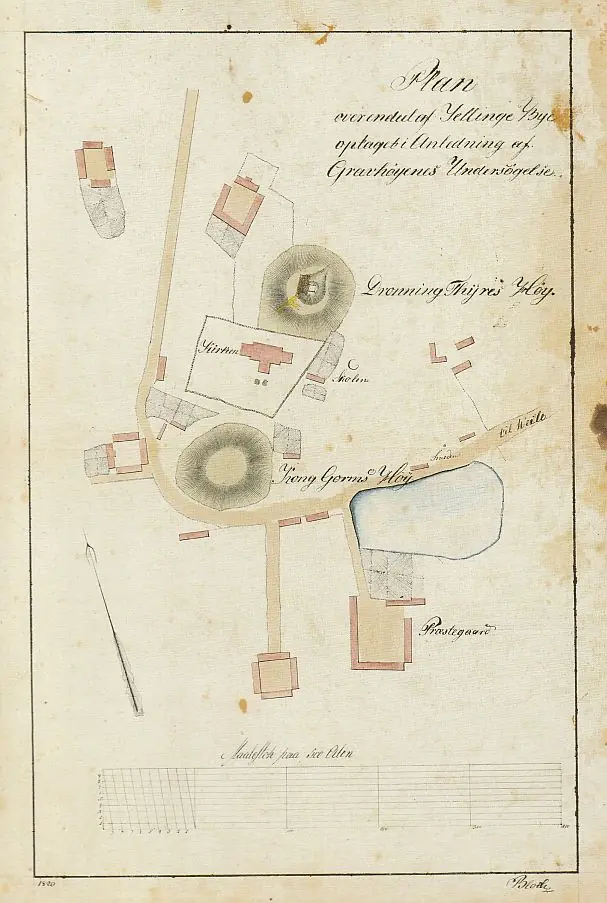
Dies ist eine originale Planzeichnung von Capt. T. C. A. Bloch von 1820 zu den Untersuchungen des Nordhügels - Original heute im Antikvarisk -Topografisk Arkiv in Kopenhagen - Scan aus "Gåden om Kong Gorms Grav, Historien om Nordhøjen i Jelling" von Knud J. Krogh (Herning 1993), Frontispiz / Fig. 1.
Von J. H. T. Hanck wurde dieses Aquarell am 03.06.1820 als nicht maßstabsgerechte Plan- und Querschnittskizze zu dem Brunnenloch auf dem Nordhügel angefertigt, so dass man sich auch heutzutage eine Vorstellung davon machen kann, wie sie das damals antrafen.
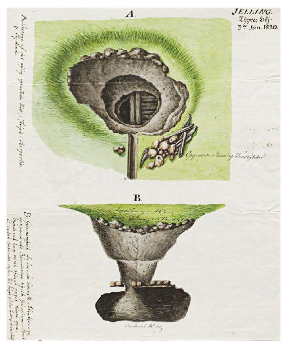
Original heute im Antikvarisk -Topografisk Arkiv in Kopenhagen - Bild aus dem Artikel von Henrik Breuning-Madsen, Mads Kähler Holst und Peter Steen Henriksen - Brønden p å toppen af Nordhøjen i Jelling (Nationalmuseets Arbejdsmark, 2010, S. 192-203)
Prof. Finnur Magnusson und Christian Jürgensen Thomsen (*29. Dezember 1788 - 21. Mai 1865, dänischer Altertumsforscher und Begründer des Dreiperiodensystems, nach dem die europäische Urgeschichte in Steinzeit, Bronzezeit und Eisenzeit zu unterteilen ist) von der Antikenkommission haben dann die vollständige Ausräumung der Grabkammer sorgfältig beschrieben. Unter den wenigen Grabfunden, die sich erhalten hatten, war der berühmte kleine Silberbecher mit einem Tierornament, das zum Kennzeichen für den Jellingstil werden sollte. Der Becher hat die Maße 4,5 x 4,3 cm und ein Fassungsvermögen von nur ca. 35 ml. Er wurde am 18. September 1820 bei der Untersuchung der Grabkammer in Nordhügel in Jelling entdeckt. Bis heute ist der Becher der bekannteste Fund aus Jelling. Trotz des langjährigen Verbleibs im Hügel und der anschließenden, etwas unsachgemäßen Renovierung bleibt der Becher ein beeindruckendes Stück Silberschmiedearbeit und ein edler Ausdruck der künstlerischen und metalltechnologischen Fähigkeiten der Wikingerzeit.
Im Jahr 1823 kam dieses kleine 78-seitige Büchlein (und 2 Tafeln) mit dem Titel: "Efterretninger om Mindesmærkerne ved Jellinge og de derved i Aarene 1820 og 1821 foretagne undersøgelser m. m." von Prof. Finn Magnusen (Finnur Magnusson * 27. August 1781 - 24. Dezember 1847, isländischer Philologe und Archivar) und Cancelieraad Thomsen (Christian Jürgensen Thomsen (*29.12.1788 - 21.05.1865, Altertumsforscher) auf den Markt.
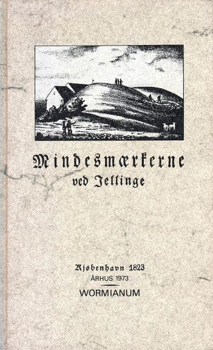
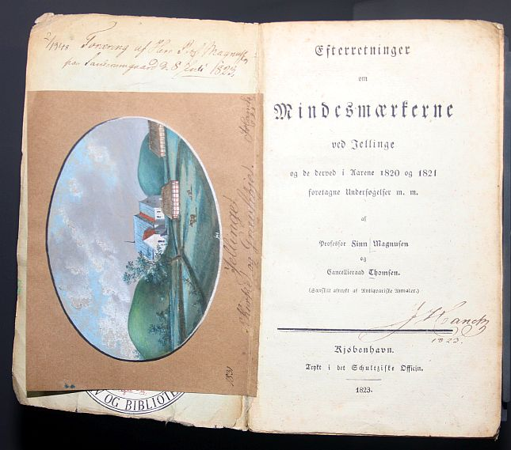
Titel des Nachdrucks von 1973 (Aarhus, Wormianum - ca. 12 x 20 cm) und daneben eine aufgeschlagene Originalausgabe - Bildquelle: Eigener Scan der in meinem Besitz befindlichen Ausgabe / eigenes Foto eines Originals in der Ausstellung von Kongernes Jelling vom 21.08.2013.
Dieses Originalexemplar gehörte J. H. T. Hanck (Johan Henrik Trutzschler Hanck - *26. Januar 1776 - 23. Juli 1840 dänischer Zeichner, Maler, Assistenzprofessor), der bei den Ausgrabungen selbst dabei war und der es ausweislich seines handschriftlichen Eintrages (links oben) am 08. Juli 1823 von Prof. Magnusen auf dem Gutshof Sanderumgård verehrt bekam. Später hat er noch diese hübsche, selbstgefertigte Zeichnung der Jelling Monumente, datiert auf das Jahr 1831, eingeklebt.
Das Büchlein war ein Sonderdruck der Aufzeichnungen aus den "Antiqvariske annaler. 4. 1827". Darin fand sich unter II. dieser Inhalt:
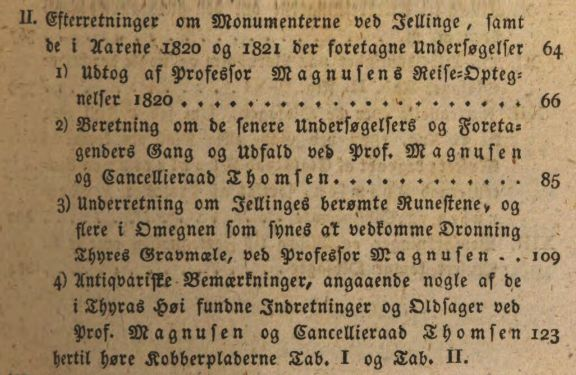
Quelle: Dieser Screenshot findet sich in einer digitalisierten Ausgabe der "Antiqvariske annaler. 4. 1827" im Internet über die Bayerische Staatsbibliothek / MDZ Münchener DigitalisierungsZentrum Digitale Bibliothek - https://mdz-nbn-resolving.de/urn:nbn:de:bvb:12-bsb10451341-0 - abgerufen 27.06.2023.
In der o.a. Abhandlung und in dem separaten Büchlein sind jeweils diese 2 Tafeln - Zeichnungen von H.G.F. Holm (*23. April 1803 - 01. Mai 1861, Künstler und Kupferstecher) - eingebunden, die einen Querschnitt durch den Grabhügel und einige Funde (dazu Zeichnungen der Inschriften/Runensteine von Læborg und Bække zeigen).
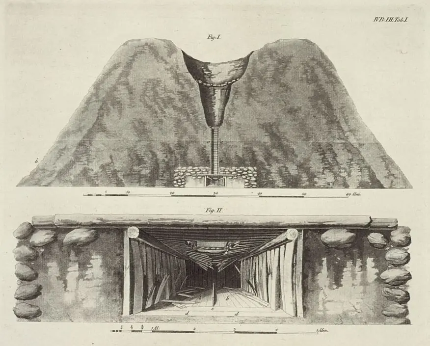
Digitale Sammlung des Nationalmuseums Kopenhagen - Lizenz: CC BY-NC-ND 4.0
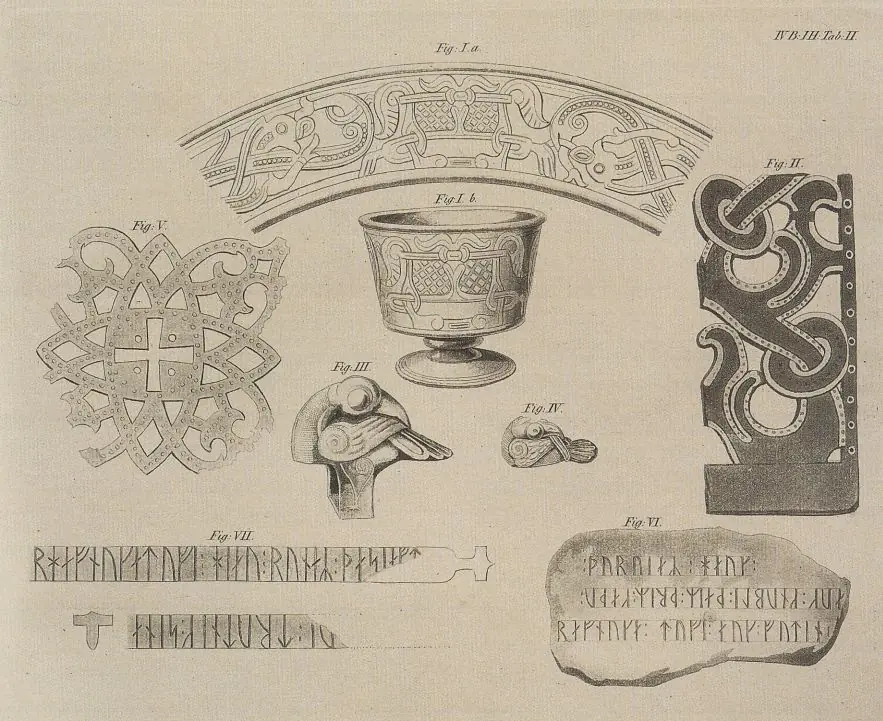
Eigener Scan der Wiedergabe in Hedensk og Kristent, Fundene fra den kongelige gravhøj i Jelling - von Knud J. Krogh og Bodil Leth-Larsen, 2007, S. 55
Zwischen den Soden dieses und des südlichen Hügels haben sich einige hölzernen Gerätschaften erhalten, die die Mannschaft für jene großen Bauwerke benutzt hat, und zwar in erster Linie Holzspaten mit langem Blatt und einem Handgriff mit Endknopf, die aus einem Stück herausgeschnitten sind. Die Soden hat man von den umliegenden Weiden mit Bahren, tragbar für zwei Männer, herantransportiert. Sie bestanden aus zwei langen Latten mit Handgriffen und mit Brettern dazwischen, auf denen die Soden gelegen hatten. Mehrere Tragbahren blieben im Hügelmantel erhalten, der sehr sorgfältig, Sode über Sode, aufgebaut wurde, wie man ein Dach mit Ziegelsteinen belegt.
Auf der Sohle des Nordhügels und in die Kuppe eines Hügels aus der älteren Bronzezeit eingegraben stand die große aus Eichenholz gebaute Grabkammer, die im Jahre 1820 aufgedeckt wurde, aber schon damals geöffnet und ausgeplündert war.
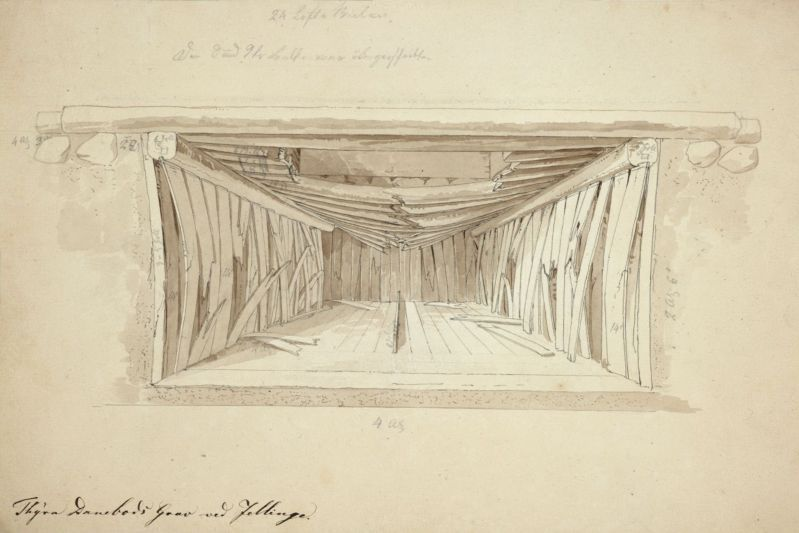
Digitale Sammlung des Nationalmuseums Kopenhagen - Zeichnung von 1821 von H.G.F. Holm - Foto: Jesper Weng - Lizenz: CC BY-NC-ND 4.0
Das zeigte sich deutlich an vier durchgesägten Eichenbalken in der Reihe, die quer über der von Osten nach Westen gerichteten Grabkammer lagen. Von ihnen war nämlich der 6. und 7. nebst dem 10. und 11. Stamm von Osten her durchgehauen. Das Loch zur Grabkammer wurde von den dazwischenliegenden Stämmen, Nr. 8 und 9, in zwei Teile geteilt. Sie wurden erst bei der Untersuchung im Jahre 1820 durchgesägt und entfernt, um die Erde, die bei der Brunnengrabung der Ortsbewohner von allen Seiten in die Kammer gefallen war, entfernen zu können. Die Grabkammer maß in Richtung Ost nach West 6,75 m. Sie war 2,60 m breit und 1,45 m hoch. Sie war von einer Lehmschicht und außerdem von einer Schicht schwerer Feldsteine an den Seiten umgeben. Der Boden lag 1,40 m über der Hügelbasis und 6,75 m unter der Hügeloberfläche. Oben hatte sie eine Decke von 24 mit Rinde bekleideten Eichenstämmen, von denen vier, wie berichtet, bei der Grabplünderung durchgehauen worden waren. Dies muss lange vor der Zeit König Friedrich IV. (*21.10.1671 - 12.10.1730) geschehen sein, da das von der Plünderung herrührende Loch und die mit Lehm umpackte und wasserdichte Kammer das Regenwasser angesammelt und den erwähnten Teich in der Kuppe des Hügels gebildet hatten. Das Wasser daraus soll so rein und wohlschmeckend gewesen sein, dass man sich davon noch aus entfernteren Gebieten etwas als Teewasser holte.
Die
Grabkammer bestand aus 35 cm breiten
senkrechten Planken, an der Innenseite mit senkrechten Brettern bekleidet
und unter der Decke mit längslaufenden Brettern versehen war. Die Decke und die
Wände waren mit einem wollenen Stoff bekleidet. Der Fußboden war mit Brettern
auf einer Unterlage von festgestampften Brettern belegt; sie lagen in der östlichen
Hälfte der Kammer quer, am westlichen Ende aber in der Längsrichtung des
Grabes. Der Boden war der Länge nach in zwei gleich große Teile durch eine
4,06 m lange Planke unterteilt die 15 cm über der Fußbodenschicht herausragte.
Daraus resultiert die Annahme, dass die Grabkammer für zwei Personen bestimmt
war. Da der südliche Hügel kein Grab aufwies, ist es möglich,
dass
Königin Thyra und
Allerdings ist inzwischen von anderen Grabkammern, die ganz sicher nur einer einzigen Person gedient haben, bekannt, dass diese auch mit einer teilenden Mittelplanke versehen waren (Haithabu, Süderbrarup). Von daher ist die Mittelplanke als eindeutiger Beweis für ein Doppelbegräbnis von Thyra und Gorm nicht haltbar.
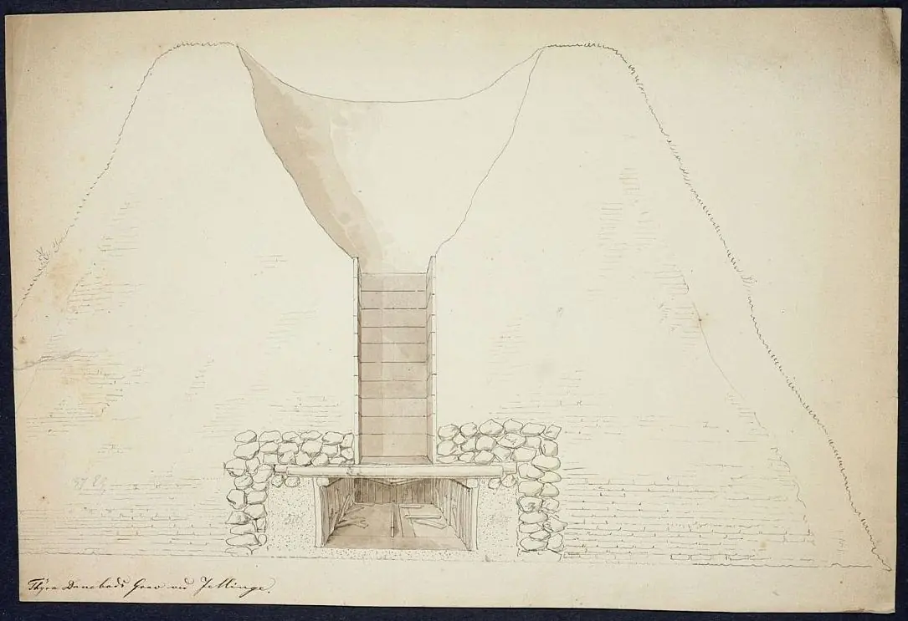
Von den Toten und ihrer sicher prachtvollen Grabaussteuer war nur noch wenig erhalten. Alles lag verstreut ohne jegliche Ordnung umher, weshalb man von einer Plünderung ausging. Es fand sich 1820 aber u.a. ein kleiner vergoldeter Silberbecher, der sich gleich unter der einen Bruchstelle in der Decke fand. Ferner fanden sich bei dieser Ausgrabung im westlichen Eck der Kammer auch zwei nahezu identische, vergoldete Bronzebeschläge. Von den Beigesetzten war nur ein kleines Stück eines Schädels und ein Röhrenknochen erhalten, die bei der Ausgrabung 1861 geborgen wurden. Außerdem fand man mehrere Stücke von Tierknochen nebst einem Pferdezahn. Bei der Ausgrabung 1861 wurde auch ein Fragment vom Rand einer silbernen Platte aufgefunden.
Von den übrigen Funden müssen zwei kleine Vogelfiguren aus Bronze genannt werden, die mit Goldplatten überzogen sind, ferner ein eiserner Scheidenbeschlag mit verzierter Silberauflage, ein Bronzebeschlag mit Vergoldung in durchbrochener Arbeit, der unter anderem ein Kreuz zeigt, das von Nagellöchern umgeben ist, außerdem Scherben eines Glasgefäßes, das mit aufgelegten geriffelten Glasbändern verziert ist, ein kleines Stück eines roten Seidenstoffes feinster Webart und verschiedene Holzstücke, die mit weißen, roten und schwarzen Farben bemalt sind. Auf einer dünnen Platte aus Eichenholz hatte man einen bärtigen Krieger ausgeschnitten, der mit einer Ringbrünne bekleidet und von einer Schlange umschlungen war, ein Motiv, das an die Christusdarstellung auf dem großen Runenstein erinnert. Es handelt sich aber doch nur um Brocken einer prächtigen königlichen Aussteuer, die die Grabräuber und der natürliche Zerfall hinterlassen haben. Ein paar eiserne Ringe fand man bei einer etwa 2 m langen Schiffskiste, die im westlichen Teil des Vorraumes stand und ursprünglich wohl verschiedene Teile der Grabaussteuer enthalten hatte. Die Toten hatten nicht in eigenen Särgen gelegen, sondern waren jeder in seiner Abteilung am Westende beigesetzt worden. Sie ruhten auf Daunenkissen, von denen sich Spuren fanden und die man von gleichzeitigen Gräbern kennt, unter anderem von Mammen zwischen Viborg und Randers.
In der Grabstube im nördlichen Hügel von Jelling fand sich bei der Ausgrabung im Jahre 1820 ein kleines Wachslicht, das man auf einen Deckenbalken in einem Zwischenraum zwischen großen Steinen hingestellt hatte. Es ist nicht klar, ob es sich um ein christliches Altarlicht oder um ein Mittel gegen Trolle und Widergänger handelte.
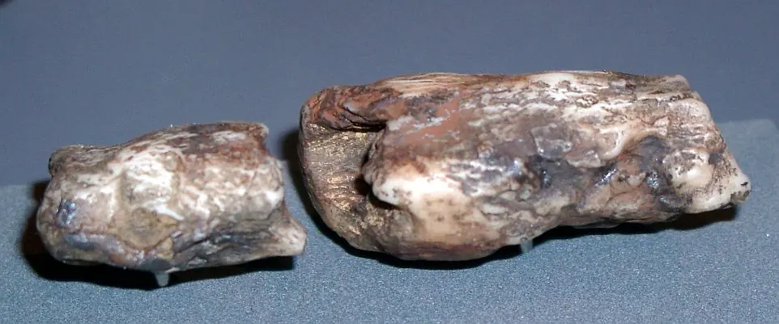
Eigenes Foto in der Ausstellung Kongernes Jelling vom 15.08.2009
Unter den wenigen Grabfunden, die sich erhalten hatten, war der berühmte kleine Silberbecher mit einem Tierornament, das zum Kennzeichen für den Jellingstil werden sollte. Der Becher hat die Maße 4,5 x 4,3 cm und ein Fassungsvermögen von nur ca. 35 ml. Er wurde am 18. September 1820 bei der Untersuchung der Grabkammer in Nordhügel in Jelling entdeckt. Bis heute ist der Becher der bekannteste Fund aus Jelling. Trotz des langjährigen Verbleibs im Hügel und der anschließenden, etwas unsachgemäßen Renovierung bleibt der Becher ein beeindruckendes Stück Silberschmiedearbeit und ein edler Ausdruck der künstlerischen und metalltechnologischen Fähigkeiten der Wikingerzeit.
Die erste Zeichnung des Bechers aus dem Kammergrab im Nordhügel wurde von Capt. T. C. A. Bloch am 18.09.1820 ausgeführt (Bildquelle: Jellingprojektet)


Bildquelle rechts: Digitale Sammlung des Nationalmuseums Kopenhagen - Foto: John Lee - Lizenz: CC BY-SA 4.0
 Abwicklung
der kompletten Ornamentik - frei von Urheberrechten.
Abwicklung
der kompletten Ornamentik - frei von Urheberrechten.
Der Becher kann über diesen Link - Digitale Sammlung des Nationalmuseums Kopenhagen - stufenlos gedreht werden und ermöglicht so eine komplette Ansicht der rundherum verlaufenden Ornamentik!
Informationen zu dem kleinen Silberbecher finden sich z.B. auf der Webseite des Jellingprojektes (mit Unterseiten - Bægerets funktion / Bægerets stil / Bægerets tilstand).
Torsten Capelle (*11.10.1939 - 09.07.2014, Ur- und Frühgeschichtler) vertritt in einem Aufsatz (Zum Silberkelch von Jelling, Acta Archaeologica 55, 1984, S.199-200) die Auffassung, dass der Kelch von der stilistischen Zuweisung frühestens um die Mitte des 10. Jh., wahrscheinlich sogar erst danach entstanden ist und somit nicht zum Grabgut gehört haben kann. Bei der wikingerzeitlichen Ausräumung der Kammer und Umbettung in die hölzerne Kirche von Jellingwäre ein so wertvolles Stück auch kaum übersehen worden. Seine Vermutung geht dahin, dass der Kelch auf Veranlassung von Harald Blauzahn in der leeren Kammer deponiert wurde. Vielleicht sollte damit der ehemals heidnische Grabraum auf diese Weise symbolisch geweiht werden, um das neu entstandene christliche Gesamtmonument nicht zu störenZum Silberkelch von Jelling, Acta Archaeologica 55, 1984, S.199-200) die Auffassung, dass der Kelch von der stilistischen Zuweisung frühestens um die Mitte des 10. Jh., wahrscheinlich sogar erst danach entstanden ist und somit nicht zum Grabgut gehört haben kann. Bei der wikingerzeitlichen Ausräumung der Kammer und Umbettung in die hölzerne Kirche von Jelling wäre ein so wertvolles Stück auch kaum übersehen worden. Seine Vermutung geht dahin, dass der Kelch auf Veranlassung von Harald Blauzahn in der leeren Kammer deponiert wurde. Vielleicht sollte damit der ehemals heidnische Grabraum auf diese Weise symbolisch geweiht werden, um das neu entstandene christliche Gesamtmonument nicht zu stören (siehe Abschnitt Kirche).
Ausgrabungen 1861
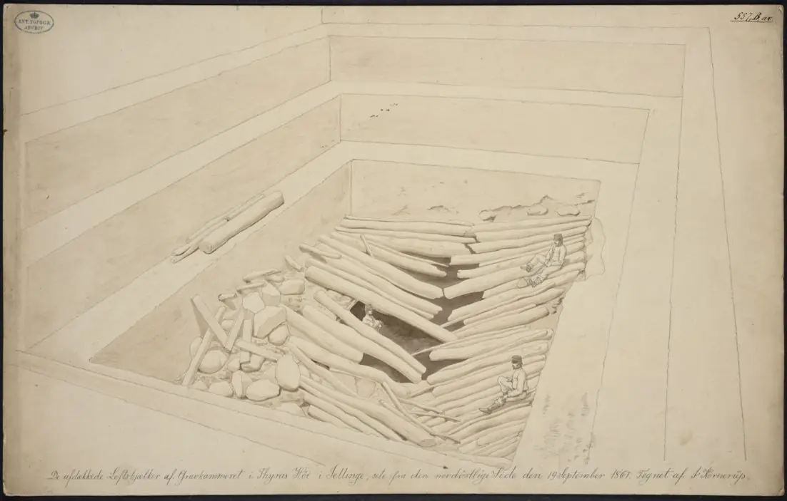
Situation am 19. September 1861 - Zeichnung von Jacob Kornerup (*19.11.1825 - 09.03.1913, dänischer Archäologe und Zeichner aus Roskilde) - Quelle: Digitale Bildersammlung des Nationalmuseums in Kopenhagen - Foto: Jesper Weng - Lizenz: CC BY-NC-ND 4.0
Der Eingang in den Minengang des Nordhügels wurde mit einem sehr schön geschnitzten hölzernen Eingangsportal verziert - Zeichnung aus dem August 1861 von Jacob Kornerup - war aber ursprünglich am zuerst ausgegrabenen Südhügel montiert gewesen.


Quelle: Digitale Bildersammlung Nationalmuseum Kopenhagen - Portal am Nordhügel - von Jacob Kornerup - Lizenz: Public Domain / Portal - Runentext von Worsaae verfasst (Leserichtung links: von unten nach oben / rechts: von oben nach unten): "Hav tak, o konning! fra højens muld / du skænker os minder og kundskabs guld" (Übersetzt: "Danke, oh König! Aus der Erde des Hügels / Du gibst uns Erinnerungen und das Gold des Wissens" - in der Sammlung im Nationalhistorischen Museum auf Schloss Frederiksborg in Kopenhagen
Erst am 23. Juni 1863 fand der Uhrmacher Anders Hansen Sørensen unter merkwürdigen Umstäden im Aushub des Nordhügels dieses kleine Hängekreuz aus vergoldetem Kupfer - Maße: H: 3, 8 cm / B: 3,4 cm - Vorderseite mit querverlaufender Rillenpunzierung (dort ging die Vergoldung verloren).
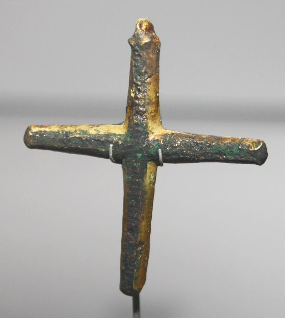
Eigenes Foto - hier etwa Maßstab 2:1 - vom 21.08.2013 in dem Museum Kongernes Jelling
Es
kann sowohl absichtlich in der Grabkammer hinterlegt worden sein als auch
während der Arbeiten in Verbindung mit der Überführung der sterblichen
Überreste
Nach den Ausgrabungen am Südhügel in
Jelling
durch
Ejnar Dyggve (*17.10.1887 - 06.08.1961, Architekt, Archäologe)
in den Jahren 1941/42 nahm dieser zwischen dem 18. Juli
und dem 19. September 1942 auch
Grabungen am Nordhügel vor. Von
der Ostseite wurde ein Schnitt bis in
die Ostseite der Grabkammer vorgenommen. Seine Zielsetzung war
klar vorgegeben: 1.) Der Aufbau des Hügels, 2.) Lage der Grabkammer, 3.)
Einzelheiten der Konstruktion der Grabkammer und 4.) Wurde der Nordhügel wie der
Südhügel auf dem Erdboden errichtet. Es stellte sich dann heraus, dass der
Nordhügel über einem älteren,
bronzezeitlichen Grabhügel errichtet wurde, in den die
Grabkammer gesetzt worden war. Es fanden sich im Nordhügel,
ähnlich wie im Südhügel, Fragmente einer hölzernen
Konstruktion die wohl dem Aufbau dienten.
Dyggve und
Johannes Brøndsted
(*05.10.1890 - 16.08.1965, Archäologe, Prähistoriker und Museumsdirektor)
vertraten die Auffassung, dass
Thyra und
Unmittelbar nach der Ausgrabung im Jahr 1861 wurde die Grabkammer des nördlichen Hügels wiederhergestellt und durch einen langen Gang von der Südseite des Hügels aus der Öffentlichkeit zugänglich gemacht; aber das alte Holzwerk konnte der Feuchtigkeit nicht standhalten und verfiel schon bald. 1942 wurde festgestellt, dass die Kammer nun völlig eingestürzt war.
Dazu finden sich erst seit 2022 zahlreiche schwarzweiß Fotografien eines unbekannten Fotografen in der Digitale Bildersammlung des Nationalmuseums in Kopenhagen, von denen ich einige hier wiedergeben möchte - Lizenz jeweils Public Domain .
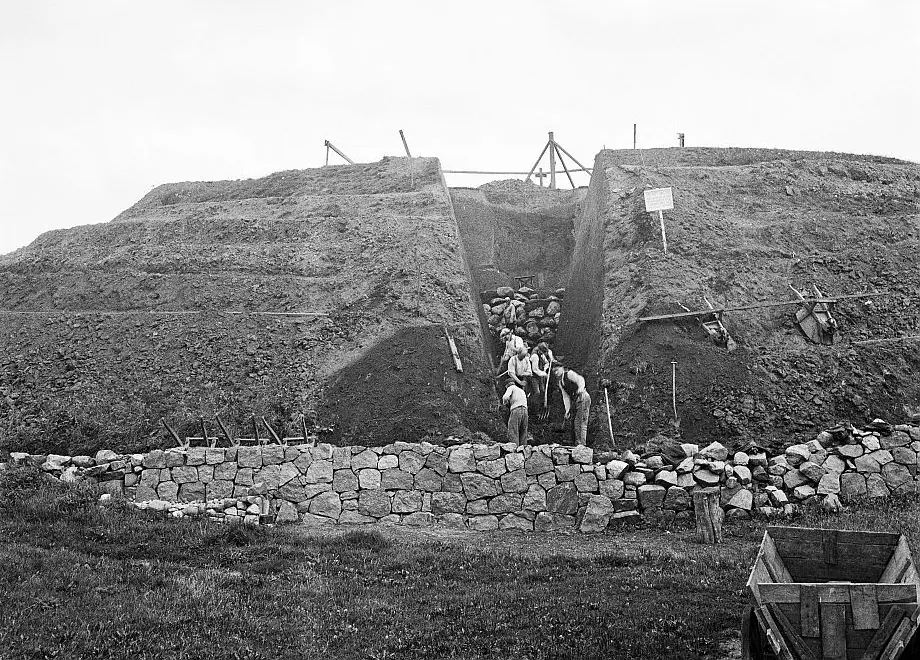
Aus deren Bestand habe ich eine Auswahl getroffen und bringe hier weitere Fotografien verkleinert (Doppelklick zur vergrößerten Darstellung). Die Bilder zeigen zunächst den Einschnitt, der mühsam per Hand unter Zuhilfenahme von Schaufeln und Schubkarren angelegt wurde. Danach sieht man die Grabkammer, die mit zahlreichen Steinen überdeckt war. Es geht mit einigen Fotos zum Konstruktionsaufbau weiter, gefolgt von einem Detailfoto des Grassodenaufbaus.
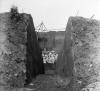 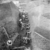 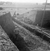 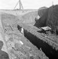 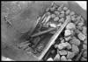 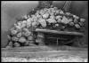 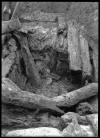 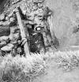 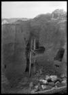 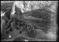 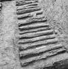 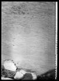


Ejnar Dyggve hat in Antiquity XXII, 1948, Issue 88, S. 190-197, zu diesen Ausgrabungen einen Bericht mit dem Titel "The royal Barrows at Jelling" veröffentlicht.
Durch verbesserte naturwissenschaftliche Verfahren war es
1987 möglich eine sichere Bestimmung zum
Baudatum des Nordhügels vorzunehmen. Aus dem
Nordhügel waren insgesamt sieben Holzproben zur
Altersbestimmung herangezogen werden, die bei der
Ausgrabung 1942 eingesammelt worden waren. Über die sogenannte
Dendrochronologie konnte zu der Holzprobe
"JL 219" bestimmt werden, dass der Baum im
Winterhalbjahr 958/59 gefällt wurde. Bei diesem Stück Holz war
glücklicherweise sowohl das dunklere Kernholz als auch das
hellere Splintholz bis zur Baumrinde erhalten
geblieben. Der Stamm mit der Bezeichnung "M"
fand sich im Nordhügel und war oberhalb der
Steinpackung abgelegt gewesen, die über der
Balkendecke der Grabkammer angelegt worden war (siehe
Foto unten). Demnach müsste
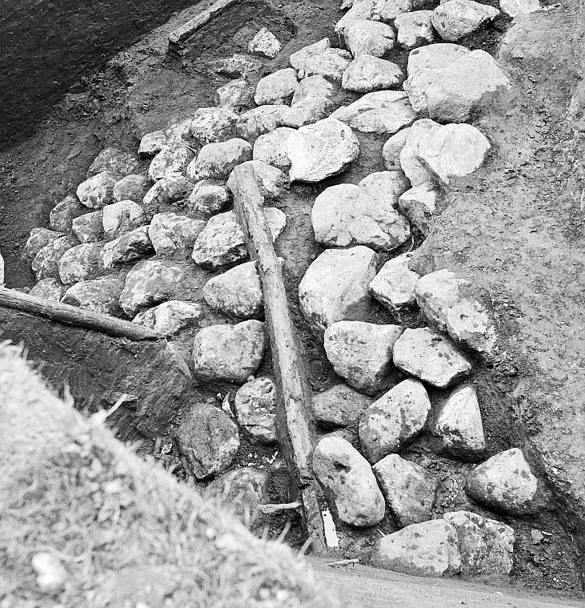
Bildquelle: Digitale Bildersammlung des Nationalmuseums in Kopenhagen - unbekannter Fotograf - Lizenz Public Domain .
Hier noch beispielhaft die Probe "JL 216" die von einem der insgesamt 25 Balken der Decke der Grabkammer stammt und in der Ausstellung Kongernes Jelling gezeigt wird - eigenes Foto vom 21.08.2013 - Deren jüngster Jahrring datiert in das Jahr 945. Von den Hölzern waren im Rahmen der Forschungen im Krankenhaus von Hvidovre - Vorort von Kopenhagen - auch noch CT Aufnahmen gemacht worden.
Im Rahmen des Jellingprojektet in den Jahren 2008 - 2014 wurden auch Bohrungen an beiden Grabhügeln vorgenommen.
Im August / September 2009 führten Mitarbeiter der Abteilung für Geologie und Geographie der Universität Kopenhagen und des Nationalmuseums eine Reihe von Bohrlöchern in den beiden Hügeln in Jelling durch. Sieben Bohrlöcher im Nordhügel und vier Bohrlöcher im Südhügel. Die Bohrlöcher wurden auf der Grundlage der Erkenntnisse aus den älteren Ausgrabungen platziert, so dass Störungen vermieden wurden, mit Ausnahme von zwei Bohrlöchern, die in den zentralen Ausgrabungsbereichen jedes Hügels angebracht wurden. Ziel war es, den Bau der Hügel und die Erhaltungsbedingungen für Pollen und Pflanzenreste zu untersuchen und Daten zu sammeln, die Aufschluss über die Landschaft in und um Jelling in der Wikingerzeit geben könnten.
Die Bohrungen wurden mit einer handbetriebenen Kammerbohrmaschine durchgeführt, die für Bohren in steinigem Boden entwickelt wurde. Der Durchmesser des Bohrers betrug 7 cm und bestand aus einem Handgriff, einem Bohrkopf und mehreren 1 m langen Verlängerungsstangen. Die Bohrarbeiten konnten man mit einem Kombibohrer bis 5 m durchführen, danach musste der Bohrer beim Heben und Senken des Bohrers geteilt und zusammengebaut werden. Dies liegt daran, dass die Bohrstangen sich sonst verbogen hätten. An jedem Bohrloch wurde eine Probe von üblicherweise 10-15 cm entnommen. Es waren 71 Auf- und Abstiege erforderlich. Alle Bohrlöcher erreichten den verdeckten Untergrund aus prähistorischer Zeit und landeten im Untergrund, der gelbbraun und gut erkennbar war.
Die tiefste Bohrung reichte bis zu einer Tiefe von 9,40 m, gemessen von der Spitze des Südhügels. Unterwegs wurden Proben aus bedeutenden Schichten entnommen, teils für chemische und physikalische Bodenanalysen und C14-Datierungen, teils für Makrofossilanalysen und Pollenanalysen. Manche Gräser aus den Bohrproben waren bei ihrer Entnahme noch grün, verfärbten sich aber an der Luft in kürzester Zeit braun.

Übersetzung Legende: a. Bohrung an der Nordkante des Südhügels / b. Bohrloch auf dem Nordhügel in dem der Grundwasserspiegel gemessen wurde / c. Gut erhaltene Pflanzenreste auf der Oberfläche eines Grassoden / d. Der Übergang zwischen Hügelerde und Untergrund
Quelle:
Brønden på toppen af Nordhøjen i Jelling - von Henrik
Breuning-Madsen, Mads Kähler Holst und Peter
Steen Henriksen - Nationalmuseets Arbejdsmark 2010
- S. 197 - abgerufen und hier eingefügt: 12.12.2023
Die gut erhaltenen Überreste organischen Materials wie
Samen, Blätter und Zweige
jeder Probe wurden unter dem Mikroskop gezählt, und die
vorläufigen Ergebnisse der Bohrungen zeigen, dass es sich um eine sehr
einheitliche Art handelt. Überall im Hügel wurde mehr oder weniger die
gleichen Grassoden verwendet, was eine sehr
homogene Zusammensetzung ergibt. Die in den Soden
gefundenen Samen und andere Pflanzenreste
zeigen, dass es sich dabei eindeutig um Heidepflanzen und insbesondere
um Heidekraut handelt. Ging man früher davon aus, dass die
Soden für den Hügelbau aus den Heideflächen
eines entfernteren Einzugsgebiets eingebracht wurde, scheint dies nach den vorläufigen Ergebnissen
der Analysen nun nicht mehr der Fall zu sein. Allen Berichten zufolge wurden die
Soden unmittelbar in der Nähe der Hügel abgebaut, da der Boden
in den Soden ziemlich lehmig war, genau wie der Untergrund in
Jelling.
Die Soden wurden daher eher in der näheren Umgebung und nicht in der
Heide abgebaut. Es vermittelt ein etwas anderes Bild der Landschaft
rund um
Jelling,
als man es sich zunächst vorstellen würde. Normalerweise wäre dieser fruchtbare
Bodentyp im Gegensatz zu den Sandmooren weiter westlich als
Ackerland kultiviert worden. Die Zusammensetzung
der Soden lässt jedoch darauf schließen, dass sich um die Hügel herum
große offene und unbewirtschaftete Heidestücke befanden, die dann zerschnitten
und in die Hügel gelegt wurden.
Die Bohrlöcher haben auch neue Fragen im Zusammenhang mit dem Bau des Nordhügels und des Teichs oder Brunnens auf dem Hügel aufgeworfen, den die Bauern im frühen 19. Jahrhundert als Wasserreservoir nutzten. Der Aushub für die Grabkammer (der erste Einbruch) wurde wahrscheinlich nicht vollständig verfüllt, und in der Mitte des Hügels kam es zu einer geringfügigen Senkung, ähnlich wie bei vielen anderen großen Hügeln, die späteren Eingriffen ausgesetzt waren. Diese Senkung diente als Auffangbecken für Regenwasser, das nicht durch den lehmigen Boden des Hügels nach unten dringen konnte. Bei den Bohrungen traf man nämlich in etwa 2 m Tiefe auf eine wasserunddurchlässige Erdschicht von ca. 0,5 bis 1 m Stärke.
In der oberen grafischen Darstellung (Quelle: Brønden på toppen af Nordhøjen i Jelling - von Henrik Breuning-Madsen, Mads Kähler Holst und Peter Steen Henriksen - Nationalmuseets Arbejdsmark 2010 - S. 201 - abgerufen und hier eingefügt: 12.12.2023) wird veranschaulicht, wie sich eingesickertes Regenwasser zunächst innerhalb des Nordhügels verhalten hat. Durch den Hügelaufbau mit sehr lehmhaltiger Erde sickerte es nicht bis zum Erdboden durch, sondern bildete quasi in der Höhe einen Grundwasserspiegel. In der unteren Darstellung hat sich nach einer Grabung und Öffnung der Grabkammer - wohl noch in grauer Vorzeit vorgenommen - neben diesem Grundwasserspiegel in der Höhe auch eine Ansammlung gebildet, die immer als Teich oder Brunnen wahrgenommen wurde.
Im Nordhügel wurde unmittelbar nach Abschluss der Bohrungen ein 7,5 m tiefes Bohrloch westlich von Frederik VII. Grabung nicht verschlossen. In dem Bohrloch wurde in der Folgezeit - 27. August bis 11. September 2009 - jeden Tag der Grundwasserspiegel gemessen. In der u.a. Grafik sieht man das Messergebnis im Hinblick auf Niederschlag und Wasserstand.
Aus den
Untersuchungen lässt sich auch ablesen, dass man auch heute im Nordhügel
durch eine entsprechende Grabung wieder einen Teich anlegen könnte, der sich
durch Regenwasser speist. Der nahezu identische Hügelaufbau im Südhügel
würde es übrigens auch dort möglich machen.
Quelle:
Jellingprojektet -
Boringer i Nord- og Sydhøjen - von Sofie Drotner
und Anne Pedersen - 2009 /
Boreprøver fra højene - von Mads Dengsø Jessen - vom
26.02.2010
Im Sommer 2011 wurde im Rahmen des Jellingprojektet erneut kleinere Einschnitte / Grabungen an beiden Hügeln vorgenommen. Am 22. Juni 2011 wurde von Süden her ein Einschnitt in den Nordhügel gemacht, wo Besucher von Jelling nach der Ausgrabung Frederik VII. (* 6.Oktober 1808 - 15. November 1863, von 1848 bis zu seinem Tod König von Dänemark) im Jahr 1861 Zugang hatten, um die rekonstruierte Grabkammer zu besichtigen. Pollenproben wurden in den unteren Schichten des Nordhügels entnommen (siehe Foto). Anhand der Proben kann festgestellt werden, welche Nutzpflanzen, Bäume und Kräuter in der Nähe der Hügel gewachsen sind. Die inneren Teile des Einschnitts im Nordhügel zeigten eine schöne Torfansammlung und eine sehr starke Eisenschicht am Boden des Hügels. Diese Eisenschicht wird dort abgelagert, wo neuer feuchter Torf auf die ursprüngliche Oberfläche aus der Wikingerzeit gelegt wird. So kann man deutlich erkennen, wo sich die Schichten trennen, und Proben sowohl des hinzugefügten Torfs als auch der alten Wachstumsfläche entnehmen. Es bietet die Möglichkeit, den Boden und die Flora, auf denen der Hügel errichtet wurde, und die Umgebung, aus der die Torfe gewonnen wurden, zu vergleichen. Diese Ausgrabungen im Nordhügel ergaben auch, dass der Hügel eine etwas kreisförmigere Form hatte als heute. Dies liegt daran, dass offenbar einige Baumaterialien, möglicherweise aus der Kirche, an der Südseite des Hügels abgelegt wurden, was ihm einen leicht tropfenförmigen Grundriss verleiht. Dies könnte darauf hindeuten, dass nicht immer das gleiche Bewusstsein für die Erhaltung der Hügel bestand. Die Archäologen hatten auch gehofft, dass vom Hügel bis zur Kirche noch Kulturschichten erhalten blieben. Solche Schichten konnten nicht erkannt werden, und im Allgemeinen scheint es im Bereich nördlich der Kirche in Richtung des Hügels keine große Aktivität Bestattungen oder Ähnliches gegeben zu haben.
Beschreibung zum 2. Foto: Abschnitt im Nordhügel von oben gesehen. Die großen Steine stammen aus dem Minenschacht, der 1861 den Weg in den Hügel ebnete, und waren wahrscheinlich mal Teil der Steinpackung, die um die Grabkammer in der Mitte des Hügels liegt. Am unteren Rand des Abschnitts ist eine massive, rostrote Eisenschicht zu erkennen, die am Übergang vom Grabhügel zur ursprünglichen Oberfläche entstanden ist. Die Eisenschicht endet gut einen Meter außerhalb der Steine und markiert die Stelle, an der sich wohl ursprünglich der Hügelrand befand. Ein merkwürdiges Detail ist das Abflussrohr, das in die obere rechte Ecke verläuft und aus Richtung der Grabkammer kommt. Man weiß, dass es damals große Schwierigkeiten bereitete, die offene Grabkammer frei von Wasser zu halten, und der Abfluss könnte ein letzter Versuch gewesen sein, das Wasser umzuleiten.
Bild-/Textquelle: Jellingprojektet - Hvad Jellinghøjene gemte - Text: Mads Dengsø Jessen - Foto: Nadia Haupt / Et kig ind i højene - Text/Foto: Mads Dengsø Jessen - abgerufen 14.12.2023
Die gleichzeitige Öffnung der beiden Hügel bot auch eine gute Gelegenheit, ihre Bauweise zu vergleichen. Schon bei den umfangreichen Bohrungen im Jahr 2009 hatten man das Gefühl, dass sie sich sehr ähnlich seien. Diese Interpretation wurde bestätigt. Es war klar, dass es weder in der Struktur der Torfe noch in der Art ihrer Verlegung große Unterschiede gab ein weiterer Beweis dafür, dass beim Bau der Denkmäler ein hohes Maß an Standardisierung gewahrt wurde.
Informationen / Literaturhinweise:
Hans Kjær - Kongehøjene i Jelling - Vejle Amts Aarbøger 1913 - S. 125 - 170Sarauw, Georg F. L. - Kongehøjene og Runestenene i Jelling - Aarbøger for nordisk oldkyndighed og historie, Band 16, 1926, S. 245-280
Frederik Orluf - Kongegraven i Jelling - 1927 -
Knudsen, Fr. - Jellinghøjenes Frigørelse - Vejle Amts Aarbøger 1930 - S. 214 - 218Wammen, J. P. - Kongehøjene i Jelling i historisk belysning - Vejle Amts Aarbøger 1931 - S. 1 - 19
Hermansen, Victor - Af en Oldgranskers Breve 1848-1885 - 1938 (Briefverkehr von J. J. A. Worsaae, darin diverse Zeichnungen von Jacob Kornerup)
Jellingprojektet 1941 - Udgravning af Sydhøjen og fund af flere bautasten
Ejnar Dyggve - Jelling Kongehøje - Udgravningen 1941 - Fra Nationalmuseets Arbejdsmark - 1943 - S. 19-31
Christiansen, T. E. - Bygningen på søndre Jellinghøj - Kuml 24 - 1975 - S. 163172
Christensen, Tage E. - Bygningen på søndre Jellinghøj. En berigtigelse - Kuml 31 - 1983 - S. 279-283
Christensen, Kjeld / Krogh, Knud J. - Jelling-højene dateret - Nationalmuseets Arbejdsmark 1987 - S. 223 - 231
Henrik Breuning-Madsen, Mads Kähler Holst und Peter Steen Henriksen - Brønden på toppen af Nordhøjen i Jelling - Nationalmuseets Arbejdsmark 2010 - S. 192 - 203
Steen Hvass - Jelling Monumenterne deres historie og bevaring - 2011
Jens Vellev - Jelling, Sommeren 1861: Frederik 7. og J.J.A. Worsaaes udgravninger - 2012Jelling, sommeren 1861: Frederik 7. søger efter den gamle konge - Internetseite von www.videnskab.dk
Anne Pedersen - Jelling im 10. Jahrhundert ‒ Alte Thesen, neue Ergebnisse - 2014 - Die Wikinger und das Fränkische Reich. Identitäten zwischen Konfrontation und Annäherung, S. 275-295
Internet Artikel "Sydhøjen i Jelling, ca. 970" - Verfasser: Adam Bak - Aarhus Universität - https://danmarkshistorien.dk/
Jellingprojektet - 1861 - Den kongelige udgravning i Sydhøjen og Nordhøjen - von Sofie DrotnerJellingprojektet - 1941 - Udgravning af Sydhøjen og fund af flere bautasten - von Sofie Drotner
Jellingprojektet - Revision og dokumentation af årringsdateringer fra Jelling - von Kjeld Christensen
Jellingprojektet - 2009 - Boringer i Nord- og Sydhøjen - von Sofie Drotner und Anne Pedersen
Jellingprojektet - Boringer i Nord- og Sydhøjen 2009 - Henrik Breuning-Madsen / Charlie Christensen und Mads Kähler Holst